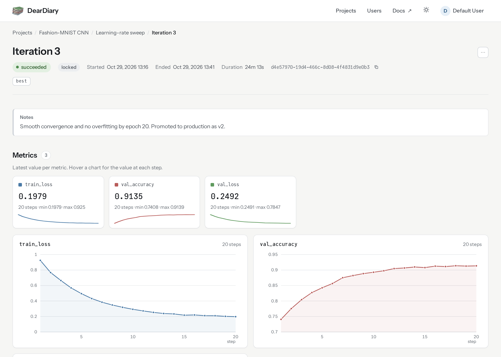

Quickstart
This page tracks one run end to end on a local database, with no server and no extra packages. For remote logging see Log from a remote client.
Open the local database. It is created on first use.
using DearDiary
DearDiary.initialize_database()Create a project and an experiment to hold the runs.
julia> project_id, _ = create_project("Iris classification")(id = 9dbd028c-323f-4b33-bf2d-3453ca9273f6, status = DearDiary.Created)julia> experiment_id, _ = create_experiment(project_id, DearDiary.IN_PROGRESS, "Decision-tree sweep")(id = 63175315-4e1a-4711-8e69-d09271fcb059, status = DearDiary.Created)
Open an iteration and log parameters and metrics. with_iteration marks the iteration SUCCEEDED on a clean return or FAILED on a throw, and snapshots the environment.
julia> with_iteration(experiment_id) do iter create_parameter(iter.id, "max_depth", 7) create_metric(iter.id, "accuracy", 0.96) end(id = ced69a16-ee71-4d4b-bcb0-6bbabf1ea583, status = DearDiary.Created)
Read the logged data back.
julia> iteration = last(get_iterations(experiment_id))DearDiary.Iteration ├ id = "807155c2-7a72-43ec-aee6-55607f65590d" ├ experiment_id = "63175315-4e1a-4711-8e69-d09271fcb059" ├ notes = "" ├ created_date = 2026-10-30T04:14:51.568 ├ end_date = 2026-10-30T04:14:51.834 ├ parent_iteration_id = nothing ├ status_id = 2 ├ error_message = "" ├ julia_version = "1.13.3" ├ git_sha = "fd5e080269ac7dc6fa439f72ce809142f133c7b9" ├ git_dirty = true ├ entrypoint = "docs/make.jl" ├ project_toml = "[deps]\nBcrypt = \"137488db-d2e6-4fb9-97f3-1e40a263e83c\"\nCompat = \"34da2185-b29b-5c13-b0c7-acf172513d20\"\nDataFrames = \"a93c6f00-e57d-5684-b7b6-d8193f3e46c0\"\nDearDiary = \"bcf306fc-d39d-4f25-b732-26abcc96baf2\"\nDocumenter = \"e30172f5-a6a5-5a46-863b-614d45cd2de4\"\nHTTP = \"cd3eb016-35fb-5094-929b-558a96fad6f3\"\nJLSO = \"9da8a3cd-07a3-59c0-a743-3fdc52c30d11\"\nJWTs = \"d850fbd6-035d-5a70-a269-1ca2e636ac6c\"\nMLJ = \"add582a8-e3ab-11e8-2d5e-e98b27df1bc7\"\nMLJDecisionTreeInterface = \"c6f25543-311c-4c74-83dc-3ea6d1015661\"\nMemoize = \"c03570c3-d221-55d1-a50c-7939bbd78826\"\nOxygen = \"df9a0d86-3283-4920-82dc-4555fc0d1d8b\"\n\n[sources]\nDearDiary = {path = \"/home/runner/work/DearDiary.jl/DearDiary.jl\"}\n\n[compat]\nBcrypt = \"0.1.1\"\nCompat = \"4.18.1\"\nDataFrames = \"1.8.2\"\nDocumenter = \"1.17.0\"\nHTTP = \"1.11.0\"\nJLSO = \"2.7.0\"\nJWTs = \"1.0.0\"\nMLJ = \"0.23.3\"\nMLJDecisionTreeInterface = \"0.5.0\"\nMemoize = \"0.4.4\"\nOxygen = \"1.10.2\"\n" └ manifest_toml = "# This file is machine-generated - editing it directly is not advised\n\njulia_version = \"1.13.3\"\nmanifest_format = \"2.1\"\nproject_hash = \"9cb0a5548d341dedd8beb37c7c056e33e21f2f2b\"\n\n[[deps.ANSIColoredPrinters]]\ngit-tree-sha1 = \"574baf8110975760d391c710b6341da1afa48d8c\"\nregistries = \"General\"\nuuid = \"a4c015fc-c6ff-483c-b24f-f7ea428134e9\"\nversion = \"0.0.1\"\n\n[[deps.ARFFFiles]]\ndeps = [\"CategoricalArrays\", \"Dates\", \"OrderedCollections\", \"Parsers\", \"Tables\"]\ngit-tree-sha1 = \"829b16815b5594d8d66b3fddb4eca193a2c3db84\"\nregistries = \"General\"\nuuid = \"da404889-ca92-49ff-9e8b-0aa6b4d38dc8\"\nversion = \"1.6.2\"\n\n[[deps.AbstractTrees]]\ngit-tree-sha1 = \"2d9c9a55f9c93e8887ad391fbae72f8ef55e1177\"\nregistries = \"General\"\nuuid = \"1520ce14-60c1-5f80-bbc7-55ef81b5835c\"\nversion = \"0.4.5\"\n\n[[deps.Accessors]]\ndeps = [\"CompositionsBase\", \"ConstructionBase\", \"Dates\", \"InverseFunctions\", \"MacroTools\"]\ngit-tree-sha1 = \"8c0bc12397dabf5d2dfc4b5763ec463854cc44d3\"\nregistries = \"General\"\nuuid = \"7d9f7c33-5ae7-4f3b-8dc6-eff91059b697\"\nversion = \"0.1.46\"\n\n [deps.Accessors.extensions]\n AxisKeysExt = \"AxisKeys\"\n IntervalSetsExt = \"IntervalSets\"\n LinearAlgebraExt = \"LinearAlgebra\"\n StaticArraysExt = \"StaticArrays\"\n StructArraysExt = \"StructArrays\"\n TestExt = \"Test\"\n UnitfulExt = \"Unitful\"\n\n [deps.Accessors.weakdeps]\n AxisKeys = \"94b1ba4f-4ee9-5380-92f1-94cde586c3c5\"\n IntervalSets = \"8197267c-284f-5f27-9208-e0e47529a953\"\n LinearAlgebra = \"37e2e46d-f89d-539d-b4ee-838fcccc9c8e\"\n StaticArrays = \"90137ffa-7385-5640-81b9-e52037218182\"\n StructArrays = \"09ab397b-f2b6-538f-b94a-2f83cf4a842a\"\n Test = \"8dfed614-e22c-5e08-85e1-65c5234f0b40\"\n Unitful = \"1986cc42-f94f-5a68-af5c-568840ba703d\"\n\n[[deps.Adapt]]\ndeps = [\"LinearAlgebra\"]\ngit-tree-sha1 = \"dee8388a9bec89c8713ad176f96960ae2f98598a\"\nregistries = \"General\"\nuuid = \"79e6a3ab-5dfb-504d-930d-738a2a938a0e\"\nversion = \"4.7.4\"\nweakdeps = [\"SparseArrays\", \"StaticArrays\"]\n\n [deps.Adapt.extensions]\n AdaptSparseArraysExt = \"SparseArrays\"\n AdaptStaticArraysExt = \"StaticArrays\"\n\n[[deps.AliasTables]]\ndeps = [\"PtrArrays\", \"Random\"]\ngit-tree-sha1 = \"9876e1e164b144ca45e9e3198d0b689cadfed9ff\"\nregistries = \"General\"\nuuid = \"66dad0bd-aa9a-41b7-9441-69ab47430ed8\"\nversion = \"1.1.3\"\n\n[[deps.ArgTools]]\nuuid = \"0dad84c5-d112-42e6-8d28-ef12dabb789f\"\nversion = \"1.1.2\"\n\n[[deps.Artifacts]]\nuuid = \"56f22d72-fd6d-98f1-02f0-08ddc0907c33\"\nversion = \"1.11.0\"\n\n[[deps.Atomix]]\ndeps = [\"UnsafeAtomics\"]\ngit-tree-sha1 = \"0aa371c875e24cf773c87b2f50ab03e4545748af\"\nregistries = \"General\"\nuuid = \"a9b6321e-bd34-4604-b9c9-b65b8de01458\"\nversion = \"1.7.0\"\n\n [deps.Atomix.weakdeps]\n CUDA = \"052768ef-5323-5732-b1bb-66c8b64840ba\"\n CUDACore = \"bd0ed864-bdfe-4181-a5ed-ce625a5fdea2\"\n\n[[deps.BFloat16s]]\ndeps = [\"LinearAlgebra\", \"Printf\", \"Random\"]\ngit-tree-sha1 = \"a708326ef8415d0d66c3b2719da68f3f23234f8f\"\nregistries = \"General\"\nuuid = \"ab4f0b2a-ad5b-11e8-123f-65d77653426b\"\nversion = \"0.6.3\"\n\n[[deps.BSON]]\ngit-tree-sha1 = \"4c3e506685c527ac6a54ccc0c8c76fd6f91b42fb\"\nregistries = \"General\"\nuuid = \"fbb218c0-5317-5bc6-957e-2ee96dd4b1f0\"\nversion = \"0.3.9\"\n\n[[deps.Base64]]\nuuid = \"2a0f44e3-6c83-55bd-87e4-b1978d98bd5f\"\nversion = \"1.11.0\"\n\n[[deps.Bcrypt]]\ndeps = [\"Base64\", \"Blowfish\", \"Printf\", \"Random\", \"Test\"]\ngit-tree-sha1 = \"b916e8655cf178255abe2bd87ca1ed015fda9b9b\"\nregistries = \"General\"\nuuid = \"137488db-d2e6-4fb9-97f3-1e40a263e83c\"\nversion = \"0.1.1\"\n\n[[deps.BitBasis]]\ndeps = [\"LinearAlgebra\", \"StaticArrays\"]\ngit-tree-sha1 = \"89dc08420d4f593ff30f02611d136b475a5eb43d\"\nregistries = \"General\"\nuuid = \"50ba71b6-fa0f-514d-ae9a-0916efc90dcf\"\nversion = \"0.9.10\"\n\n[[deps.BitFlags]]\ngit-tree-sha1 = \"bbe1079eecf9c9fbb52765193ad2bae27ae09bc8\"\nregistries = \"General\"\nuuid = \"d1d4a3ce-64b1-5f1a-9ba4-7e7e69966f35\"\nversion = \"0.1.10\"\n\n[[deps.BitIntegers]]\ndeps = [\"Random\"]\ngit-tree-sha1 = \"091d591a060e43df1dd35faab3ca284925c48e46\"\nregistries = \"General\"\nuuid = \"c3b6d118-76ef-56ca-8cc7-ebb389d030a1\"\nversion = \"0.3.7\"\n\n[[deps.Blowfish]]\ngit-tree-sha1 = \"7f2e521113281814cdca9508ef4414c3dfabc0d8\"\nregistries = \"General\"\nuuid = \"4a48ec48-d94f-48cc-b069-74d6d3e6e633\"\nversion = \"0.1.1\"\n\n[[deps.Bonito]]\ndeps = [\"Base64\", \"CodecZlib\", \"Colors\", \"Dates\", \"Deno_jll\", \"HTTP\", \"Hyperscript\", \"JSON\", \"LinearAlgebra\", \"Markdown\", \"MbedTLS\", \"MsgPack\", \"Observables\", \"OrderedCollections\", \"Random\", \"RelocatableFolders\", \"SHA\", \"Sockets\", \"Tables\", \"ThreadPools\", \"URIs\", \"UUIDs\", \"WidgetsBase\"]\ngit-tree-sha1 = \"bb43f72801f703ad3c66833bd02b8f54c7328238\"\nregistries = \"General\"\nuuid = \"824d6782-a2ef-11e9-3a09-e5662e0c26f8\"\nversion = \"4.2.0\"\n\n[[deps.CEnum]]\ngit-tree-sha1 = \"389ad5c84de1ae7cf0e28e381131c98ea87d54fc\"\nregistries = \"General\"\nuuid = \"fa961155-64e5-5f13-b03f-caf6b980ea82\"\nversion = \"0.5.0\"\n\n[[deps.Calculus]]\ndeps = [\"LinearAlgebra\"]\ngit-tree-sha1 = \"9cb23bbb1127eefb022b022481466c0f1127d430\"\nregistries = \"General\"\nuuid = \"49dc2e85-a5d0-5ad3-a950-438e2897f1b9\"\nversion = \"0.5.2\"\n\n[[deps.CategoricalArrays]]\ndeps = [\"Compat\", \"DataAPI\", \"Future\", \"Missings\", \"Printf\", \"Requires\", \"Statistics\", \"Unicode\"]\ngit-tree-sha1 = \"20ff1463035a170b25eba2ef9823bb9ad51635e4\"\nregistries = \"General\"\nuuid = \"324d7699-5711-5eae-9e2f-1d82baa6b597\"\nversion = \"1.1.1\"\n\n [deps.CategoricalArrays.extensions]\n CategoricalArraysArrowExt = \"Arrow\"\n CategoricalArraysJSONExt = \"JSON\"\n CategoricalArraysRecipesBaseExt = \"RecipesBase\"\n CategoricalArraysSentinelArraysExt = \"SentinelArrays\"\n CategoricalArraysStatsBaseExt = \"StatsBase\"\n CategoricalArraysStructTypesExt = \"StructTypes\"\n\n [deps.CategoricalArrays.weakdeps]\n Arrow = \"69666777-d1a9-59fb-9406-91d4454c9d45\"\n JSON = \"682c06a0-de6a-54ab-a142-c8b1cf79cde6\"\n RecipesBase = \"3cdcf5f2-1ef4-517c-9805-6587b60abb01\"\n SentinelArrays = \"91c51154-3ec4-41a3-a24f-3f23e20d615c\"\n StatsBase = \"2913bbd2-ae8a-5f71-8c99-4fb6c76f3a91\"\n StructTypes = \"856f2bd8-1eba-4b0a-8007-ebc267875bd4\"\n\n[[deps.CategoricalDistributions]]\ndeps = [\"CategoricalArrays\", \"Distributions\", \"Missings\", \"OrderedCollections\", \"Random\", \"Reexport\", \"ScientificTypes\"]\ngit-tree-sha1 = \"8d8a4e27199f2e961a85ea6fe768c050fb60d6d9\"\nregistries = \"General\"\nuuid = \"af321ab8-2d2e-40a6-b165-3d674595d28e\"\nversion = \"0.2.2\"\n\n [deps.CategoricalDistributions.extensions]\n UnivariateFiniteDisplayExt = \"UnicodePlots\"\n\n [deps.CategoricalDistributions.weakdeps]\n UnicodePlots = \"b8865327-cd53-5732-bb35-84acbb429228\"\n\n[[deps.ChainRulesCore]]\ndeps = [\"LinearAlgebra\"]\ngit-tree-sha1 = \"7dc4359cbda4cbf3e5dbbbf075250a63e7021f69\"\nregistries = \"General\"\nuuid = \"d360d2e6-b24c-11e9-a2a3-2a2ae2dbcce4\"\nversion = \"1.26.7\"\nweakdeps = [\"SparseArrays\"]\n\n [deps.ChainRulesCore.extensions]\n ChainRulesCoreSparseArraysExt = \"SparseArrays\"\n\n[[deps.CodeTracking]]\ndeps = [\"InteractiveUtils\", \"REPL\", \"UUIDs\"]\ngit-tree-sha1 = \"cfb7a2e89e245a9d5016b70323db412b3a7438d5\"\nregistries = \"General\"\nuuid = \"da1fd8a2-8d9e-5ec2-8556-3022fb5608a2\"\nversion = \"3.0.2\"\n\n[[deps.CodecZlib]]\ndeps = [\"TranscodingStreams\", \"Zlib_jll\"]\ngit-tree-sha1 = \"970758a3d591a2a5c2a907c53f2e2f8c1b1d3537\"\nregistries = \"General\"\nuuid = \"944b1d66-785c-5afd-91f1-9de20f533193\"\nversion = \"0.7.9\"\n\n[[deps.ColorTypes]]\ndeps = [\"FixedPointNumbers\", \"Random\"]\ngit-tree-sha1 = \"af523e59de94de05b9b367a2ca4d63233aacd222\"\nregistries = \"General\"\nuuid = \"3da002f7-5984-5a60-b8a6-cbb66c0b333f\"\nversion = \"0.12.5\"\nweakdeps = [\"StyledStrings\"]\n\n [deps.ColorTypes.extensions]\n StyledStringsExt = \"StyledStrings\"\n\n[[deps.Colors]]\ndeps = [\"ColorTypes\", \"FixedPointNumbers\", \"LinearAlgebra\", \"Reexport\"]\ngit-tree-sha1 = \"0737a3e59f9d94957f5b177fa2ca40901636b85b\"\nregistries = \"General\"\nuuid = \"5ae59095-9a9b-59fe-a467-6f913c188581\"\nversion = \"0.13.4\"\n\n[[deps.Combinatorics]]\ngit-tree-sha1 = \"c761b00e7755700f9cdf5b02039939d1359330e1\"\nregistries = \"General\"\nuuid = \"861a8166-3701-5b0c-9a16-15d98fcdc6aa\"\nversion = \"1.1.0\"\n\n[[deps.CommonSolve]]\ndeps = [\"PrecompileTools\"]\ngit-tree-sha1 = \"6c389fa857f6ca5a95474b52a52023fd77f24cb7\"\nregistries = \"General\"\nuuid = \"38540f10-b2f7-11e9-35d8-d573e4eb0ff2\"\nversion = \"0.2.14\"\n\n[[deps.Compat]]\ndeps = [\"TOML\", \"UUIDs\"]\ngit-tree-sha1 = \"9d8a54ce4b17aa5bdce0ea5c34bc5e7c340d16ad\"\nregistries = \"General\"\nuuid = \"34da2185-b29b-5c13-b0c7-acf172513d20\"\nversion = \"4.18.1\"\nweakdeps = [\"Dates\", \"LinearAlgebra\"]\n\n [deps.Compat.extensions]\n CompatLinearAlgebraExt = \"LinearAlgebra\"\n\n[[deps.CompilerCaching]]\ndeps = [\"LMDB\", \"SHA\", \"Scratch\"]\ngit-tree-sha1 = \"b032c1ce89bc82adf2bef8181c2fb75d6bce7f4a\"\nregistries = \"General\"\nuuid = \"9db33cc3-5358-4881-8759-fa4194144afd\"\nversion = \"0.5.1\"\n\n[[deps.CompilerSupportLibraries_jll]]\ndeps = [\"Artifacts\", \"Libdl\"]\nuuid = \"e66e0078-7015-5450-92f7-15fbd957f2ae\"\nversion = \"1.5.5+2\"\n\n[[deps.CompositionsBase]]\ngit-tree-sha1 = \"802bb88cd69dfd1509f6670416bd4434015693ad\"\nregistries = \"General\"\nuuid = \"a33af91c-f02d-484b-be07-31d278c5ca2b\"\nversion = \"0.1.2\"\nweakdeps = [\"InverseFunctions\"]\n\n [deps.CompositionsBase.extensions]\n CompositionsBaseInverseFunctionsExt = \"InverseFunctions\"\n\n[[deps.ComputationalResources]]\ngit-tree-sha1 = \"52cb3ec90e8a8bea0e62e275ba577ad0f74821f7\"\nregistries = \"General\"\nuuid = \"ed09eef8-17a6-5b46-8889-db040fac31e3\"\nversion = \"0.3.2\"\n\n[[deps.ConcurrentUtilities]]\ndeps = [\"Serialization\", \"Sockets\"]\ngit-tree-sha1 = \"8e0b1057b8c3627562526304d3cc8f835fbb36c0\"\nregistries = \"General\"\nuuid = \"f0e56b4a-5159-44fe-b623-3e5288b988bb\"\nversion = \"2.8.0\"\n\n[[deps.ConstructionBase]]\ngit-tree-sha1 = \"b4b092499347b18a015186eae3042f72267106cb\"\nregistries = \"General\"\nuuid = \"187b0558-2788-49d3-abe0-74a17ed4e7c9\"\nversion = \"1.6.0\"\n\n [deps.ConstructionBase.extensions]\n ConstructionBaseIntervalSetsExt = \"IntervalSets\"\n ConstructionBaseLinearAlgebraExt = \"LinearAlgebra\"\n ConstructionBaseStaticArraysExt = \"StaticArrays\"\n\n [deps.ConstructionBase.weakdeps]\n IntervalSets = \"8197267c-284f-5f27-9208-e0e47529a953\"\n LinearAlgebra = \"37e2e46d-f89d-539d-b4ee-838fcccc9c8e\"\n StaticArrays = \"90137ffa-7385-5640-81b9-e52037218182\"\n\n[[deps.Crayons]]\ngit-tree-sha1 = \"54b76cbb40d9a0f5368c880725b2f141da77c94f\"\nregistries = \"General\"\nuuid = \"a8cc5b0e-0ffa-5ad4-8c14-923d3ee1735f\"\nversion = \"4.2.0\"\n\n[[deps.DBInterface]]\ngit-tree-sha1 = \"3b22439978973353092e8782275c59e62f611e3b\"\nregistries = \"General\"\nuuid = \"a10d1c49-ce27-4219-8d33-6db1a4562965\"\nversion = \"2.8.0\"\n\n[[deps.DataAPI]]\ngit-tree-sha1 = \"abe83f3a2f1b857aac70ef8b269080af17764bbe\"\nregistries = \"General\"\nuuid = \"9a962f9c-6df0-11e9-0e5d-c546b8b5ee8a\"\nversion = \"1.16.0\"\n\n[[deps.DataFrames]]\ndeps = [\"Compat\", \"DataAPI\", \"DataStructures\", \"Future\", \"InlineStrings\", \"InvertedIndices\", \"IteratorInterfaceExtensions\", \"LinearAlgebra\", \"Markdown\", \"Missings\", \"PooledArrays\", \"PrecompileTools\", \"PrettyTables\", \"Printf\", \"Random\", \"Reexport\", \"SentinelArrays\", \"SortingAlgorithms\", \"Statistics\", \"TableTraits\", \"Tables\", \"Unicode\"]\ngit-tree-sha1 = \"5fab31e2e01e70ad66e3e24c968c264d1cf166d6\"\nregistries = \"General\"\nuuid = \"a93c6f00-e57d-5684-b7b6-d8193f3e46c0\"\nversion = \"1.8.2\"\n\n[[deps.DataStructures]]\ndeps = [\"OrderedCollections\"]\ngit-tree-sha1 = \"b0bc6d2cad1fed8b7fd59a1551a991cb3d2809e6\"\nregistries = \"General\"\nuuid = \"864edb3b-99cc-5e75-8d2d-829cb0a9cfe8\"\nversion = \"0.19.6\"\n\n[[deps.DataValueInterfaces]]\ngit-tree-sha1 = \"bfc1187b79289637fa0ef6d4436ebdfe6905cbd6\"\nregistries = \"General\"\nuuid = \"e2d170a0-9d28-54be-80f0-106bbe20a464\"\nversion = \"1.0.0\"\n\n[[deps.Dates]]\ndeps = [\"Printf\"]\nuuid = \"ade2ca70-3891-5945-98fb-dc099432e06a\"\nversion = \"1.11.0\"\n\n[[deps.DearDiary]]\ndeps = [\"Bcrypt\", \"Bonito\", \"Compat\", \"DBInterface\", \"Dates\", \"DuckDB\", \"HTTP\", \"JSON\", \"JWTs\", \"LibGit2\", \"Oxygen\", \"Pkg\", \"PrecompileTools\", \"SHA\", \"Tables\", \"UUIDs\"]\npath = \"/home/runner/work/DearDiary.jl/DearDiary.jl\"\nuuid = \"bcf306fc-d39d-4f25-b732-26abcc96baf2\"\nversion = \"0.11.0\"\n\n[[deps.DecisionTree]]\ndeps = [\"AbstractTrees\", \"DelimitedFiles\", \"LinearAlgebra\", \"Random\", \"ScikitLearnBase\", \"Statistics\"]\ngit-tree-sha1 = \"526ca14aaaf2d5a0e242f3a8a7966eb9065d7d78\"\nregistries = \"General\"\nuuid = \"7806a523-6efd-50cb-b5f6-3fa6f1930dbb\"\nversion = \"0.12.4\"\n\n[[deps.DelimitedFiles]]\ndeps = [\"Mmap\"]\ngit-tree-sha1 = \"9e2f36d3c96a820c678f2f1f1782582fcf685bae\"\nregistries = \"General\"\nuuid = \"8bb1440f-4735-579b-a4ab-409b98df4dab\"\nversion = \"1.9.1\"\n\n[[deps.Deno_jll]]\ndeps = [\"Artifacts\", \"JLLWrappers\", \"Libdl\"]\ngit-tree-sha1 = \"cd6756e833c377e0ce9cd63fb97689a255f12323\"\nregistries = \"General\"\nuuid = \"04572ae6-984a-583e-9378-9577a1c2574d\"\nversion = \"1.33.4+0\"\n\n[[deps.Distances]]\ndeps = [\"LinearAlgebra\", \"Statistics\", \"StatsAPI\"]\ngit-tree-sha1 = \"c7e3a542b999843086e2f29dac96a618c105be1d\"\nregistries = \"General\"\nuuid = \"b4f34e82-e78d-54a5-968a-f98e89d6e8f7\"\nversion = \"0.10.12\"\nweakdeps = [\"ChainRulesCore\", \"SparseArrays\"]\n\n [deps.Distances.extensions]\n DistancesChainRulesCoreExt = \"ChainRulesCore\"\n DistancesSparseArraysExt = \"SparseArrays\"\n\n[[deps.Distributed]]\ndeps = [\"Random\", \"Serialization\", \"Sockets\"]\nuuid = \"8ba89e20-285c-5b6f-9357-94700520ee1b\"\nversion = \"1.11.0\"\n\n[[deps.Distributions]]\ndeps = [\"AliasTables\", \"FillArrays\", \"LinearAlgebra\", \"PDMats\", \"Printf\", \"QuadGK\", \"Random\", \"Roots\", \"SpecialFunctions\", \"Statistics\", \"StatsAPI\", \"StatsBase\", \"StatsFuns\"]\ngit-tree-sha1 = \"2ddbc341251ed713d39e503b504593a5d6789551\"\nregistries = \"General\"\nuuid = \"31c24e10-a181-5473-b8eb-7969acd0382f\"\nversion = \"0.25.132\"\n\n [deps.Distributions.extensions]\n DistributionsChainRulesCoreExt = \"ChainRulesCore\"\n DistributionsDensityInterfaceExt = \"DensityInterface\"\n DistributionsSparseConnectivityTracerExt = \"SparseConnectivityTracer\"\n DistributionsTestExt = \"Test\"\n\n [deps.Distributions.weakdeps]\n ChainRulesCore = \"d360d2e6-b24c-11e9-a2a3-2a2ae2dbcce4\"\n DensityInterface = \"b429d917-457f-4dbc-8f4c-0cc954292b1d\"\n SparseConnectivityTracer = \"9f842d2f-2579-4b1d-911e-f412cf18a3f5\"\n Test = \"8dfed614-e22c-5e08-85e1-65c5234f0b40\"\n\n[[deps.DocStringExtensions]]\ngit-tree-sha1 = \"7442a5dfe1ebb773c29cc2962a8980f47221d76c\"\nregistries = \"General\"\nuuid = \"ffbed154-4ef7-542d-bbb7-c09d3a79fcae\"\nversion = \"0.9.5\"\n\n[[deps.Documenter]]\ndeps = [\"ANSIColoredPrinters\", \"AbstractTrees\", \"Base64\", \"CodecZlib\", \"Dates\", \"DocStringExtensions\", \"Downloads\", \"Git\", \"IOCapture\", \"InteractiveUtils\", \"JSON\", \"Logging\", \"Markdown\", \"MarkdownAST\", \"Pkg\", \"PrecompileTools\", \"REPL\", \"RegistryInstances\", \"SHA\", \"TOML\", \"Test\", \"Unicode\"]\ngit-tree-sha1 = \"191e6bef0cf32cac3a3913cd4787d851715254c2\"\nregistries = \"General\"\nuuid = \"e30172f5-a6a5-5a46-863b-614d45cd2de4\"\nversion = \"1.19.0\"\n\n[[deps.Downloads]]\ndeps = [\"ArgTools\", \"FileWatching\", \"LibCURL\", \"NetworkOptions\"]\nuuid = \"f43a241f-c20a-4ad4-852c-f6b1247861c6\"\nversion = \"1.7.0\"\n\n[[deps.DuckDB]]\ndeps = [\"DBInterface\", \"Dates\", \"DuckDB_jll\", \"FixedPointDecimals\", \"Tables\", \"UUIDs\", \"WeakRefStrings\"]\ngit-tree-sha1 = \"cdc01a7b98d5a00139d0560970b32f0c6d873929\"\nregistries = \"General\"\nuuid = \"d2f5444f-75bc-4fdf-ac35-56f514c445e1\"\nversion = \"1.5.5\"\n\n[[deps.DuckDB_jll]]\ndeps = [\"Artifacts\", \"JLLWrappers\", \"Libdl\"]\ngit-tree-sha1 = \"e8c389cd4cf291490582b65a42dfe08513dc7afd\"\nregistries = \"General\"\nuuid = \"2cbbab25-fc8b-58cf-88d4-687a02676033\"\nversion = \"1.5.6+0\"\n\n[[deps.EarlyStopping]]\ndeps = [\"Dates\", \"Statistics\"]\ngit-tree-sha1 = \"98fdf08b707aaf69f524a6cd0a67858cefe0cfb6\"\nregistries = \"General\"\nuuid = \"792122b4-ca99-40de-a6bc-6742525f08b6\"\nversion = \"0.3.0\"\n\n[[deps.ExceptionUnwrapping]]\ndeps = [\"Test\"]\ngit-tree-sha1 = \"4e468f521e1f9f86891cb07186de5df90360a666\"\nregistries = \"General\"\nuuid = \"460bff9d-24e4-43bc-9d9f-a8973cb893f4\"\nversion = \"0.1.12\"\n\n[[deps.Expat_jll]]\ndeps = [\"Artifacts\", \"JLLWrappers\", \"Libdl\"]\ngit-tree-sha1 = \"d0f666deaf8099a7d7ac229a74402ada88898be1\"\nregistries = \"General\"\nuuid = \"2e619515-83b5-522b-bb60-26c02a35a201\"\nversion = \"2.9.0+0\"\n\n[[deps.ExprTools]]\ngit-tree-sha1 = \"d2e49e7efd29719d6f28b891b0e0e159daa9d2b4\"\nregistries = \"General\"\nuuid = \"e2ba6199-217a-4e67-a87a-7c52f15ade04\"\nversion = \"0.1.11\"\n\n[[deps.FeatureSelection]]\ndeps = [\"MLJModelInterface\", \"ScientificTypesBase\", \"Tables\"]\ngit-tree-sha1 = \"cf591d055fc9919f2400a290ac19174f58cbdab1\"\nregistries = \"General\"\nuuid = \"33837fe5-dbff-4c9e-8c2f-c5612fe2b8b6\"\nversion = \"0.2.6\"\n\n[[deps.FilePathsBase]]\ndeps = [\"Compat\", \"Dates\"]\ngit-tree-sha1 = \"3bab2c5aa25e7840a4b065805c0cdfc01f3068d2\"\nregistries = \"General\"\nuuid = \"48062228-2e41-5def-b9a4-89aafe57970f\"\nversion = \"0.9.24\"\nweakdeps = [\"Mmap\", \"Test\"]\n\n [deps.FilePathsBase.extensions]\n FilePathsBaseMmapExt = \"Mmap\"\n FilePathsBaseTestExt = \"Test\"\n\n[[deps.FileWatching]]\nuuid = \"7b1f6079-737a-58dc-b8bc-7a2ca5c1b5ee\"\nversion = \"1.11.0\"\n\n[[deps.FillArrays]]\ndeps = [\"LinearAlgebra\"]\ngit-tree-sha1 = \"831f86fde78ab7f6470d6ba4d1161a11fb6b4ec0\"\nregistries = \"General\"\nuuid = \"1a297f60-69ca-5386-bcde-b61e274b549b\"\nversion = \"1.18.2\"\nweakdeps = [\"PDMats\", \"SparseArrays\", \"StaticArrays\", \"Statistics\"]\n\n [deps.FillArrays.extensions]\n FillArraysPDMatsExt = \"PDMats\"\n FillArraysSparseArraysExt = \"SparseArrays\"\n FillArraysStaticArraysExt = \"StaticArrays\"\n FillArraysStatisticsExt = \"Statistics\"\n\n[[deps.FixedPointDecimals]]\ndeps = [\"BitIntegers\", \"Parsers\"]\ngit-tree-sha1 = \"41d3a5de0eab320cc04833a373f0fcb3640073d5\"\nregistries = \"General\"\nuuid = \"fb4d412d-6eee-574d-9565-ede6634db7b0\"\nversion = \"0.6.5\"\n\n[[deps.FixedPointNumbers]]\ndeps = [\"Random\"]\ngit-tree-sha1 = \"c4ebbf6271b2ea446fd618a2a47eea7254a4e94b\"\nregistries = \"General\"\nuuid = \"53c48c17-4a7d-5ca2-90c5-79b7896eea93\"\nversion = \"0.9.3\"\nweakdeps = [\"Statistics\"]\n\n [deps.FixedPointNumbers.extensions]\n FixedPointNumbersStatisticsExt = \"Statistics\"\n\n[[deps.Future]]\ndeps = [\"Random\"]\nuuid = \"9fa8497b-333b-5362-9e8d-4d0656e87820\"\nversion = \"1.11.0\"\n\n[[deps.GPUArraysCore]]\ndeps = [\"Adapt\"]\ngit-tree-sha1 = \"f60436514e6d73f8ee069ae4ee0ff038fe96b69d\"\nregistries = \"General\"\nuuid = \"46192b85-c4d5-4398-a991-12ede77f4527\"\nversion = \"0.2.2\"\n\n[[deps.GPUCompiler]]\ndeps = [\"CompilerCaching\", \"ExprTools\", \"InteractiveUtils\", \"LLVM\", \"Libdl\", \"Logging\", \"PrecompileTools\", \"Preferences\", \"REPL\", \"ScopedValues\", \"TOML\", \"Tracy\", \"UUIDs\", \"tree_sitter_gcn_jll\", \"tree_sitter_llvm_jll\", \"tree_sitter_ptx_jll\", \"tree_sitter_spirv_jll\"]\ngit-tree-sha1 = \"5a50d015b5ef7d39f044b1b32836dc66aa67cfc3\"\nregistries = \"General\"\nuuid = \"61eb1bfa-7361-4325-ad38-22787b887f55\"\nversion = \"2.19.0\"\n\n [deps.GPUCompiler.extensions]\n CthulhuExt = \"Cthulhu\"\n HighlightsExt = \"Highlights\"\n\n [deps.GPUCompiler.weakdeps]\n AMDGPU_LLVM_Backend_jll = \"cc5c0156-bd05-5a77-8a68-bb0aafb29019\"\n Cthulhu = \"f68482b8-f384-11e8-15f7-abe071a5a75f\"\n Highlights = \"eafb193a-b7ab-5a9e-9068-77385905fa72\"\n LLVMDowngrader_jll = \"f52de702-fb25-5922-94ba-81dd59b07444\"\n NVPTX_LLVM_Backend_jll = \"ef6e0fe3-e6ef-59c0-bde6-4989574699e0\"\n SPIRV_LLVM_Backend_jll = \"4376b9bf-cff8-51b6-bb48-39421dff0d0c\"\n SPIRV_LLVM_Translator_jll = \"4a5d46fc-d8cf-5151-a261-86b458210efb\"\n\n[[deps.GPUToolbox]]\ngit-tree-sha1 = \"799f1f2dd18bf93968a2637227ba4d09115bd5fa\"\nregistries = \"General\"\nuuid = \"096a3bc2-3ced-46d0-87f4-dd12716f4bfc\"\nversion = \"3.5.0\"\n\n[[deps.Gamma]]\ndeps = [\"LogExpFunctions\"]\ngit-tree-sha1 = \"becc397f7cfb06e343496ae6ffb04818a851da51\"\nregistries = \"General\"\nuuid = \"a0844989-3bd2-4988-8bea-c9407ab0941b\"\nversion = \"1.2.0\"\n\n[[deps.Git]]\ndeps = [\"Git_LFS_jll\", \"Git_jll\", \"JLLWrappers\", \"OpenSSH_jll\"]\ngit-tree-sha1 = \"824a1890086880696fc908fe12a17bcf61738bd8\"\nregistries = \"General\"\nuuid = \"d7ba0133-e1db-5d97-8f8c-041e4b3a1eb2\"\nversion = \"1.5.0\"\n\n[[deps.Git_LFS_jll]]\ndeps = [\"Artifacts\", \"JLLWrappers\", \"Libdl\"]\ngit-tree-sha1 = \"d310b22511a51569401e975194cc76077bcd3786\"\nregistries = \"General\"\nuuid = \"020c3dae-16b3-5ae5-87b3-4cb189e250b2\"\nversion = \"3.8.1+0\"\n\n[[deps.Git_jll]]\ndeps = [\"Artifacts\", \"Expat_jll\", \"JLLWrappers\", \"LibCURL_jll\", \"Libdl\", \"Libiconv_jll\", \"OpenSSL_jll\", \"PCRE2_jll\", \"Zlib_jll\"]\ngit-tree-sha1 = \"3842d761162baf8efce819cdfb5ea070fe44ac40\"\nregistries = \"General\"\nuuid = \"f8c6e375-362e-5223-8a59-34ff63f689eb\"\nversion = \"2.56.0+0\"\n\n[[deps.HTTP]]\ndeps = [\"Base64\", \"CodecZlib\", \"ConcurrentUtilities\", \"Dates\", \"ExceptionUnwrapping\", \"Logging\", \"LoggingExtras\", \"MbedTLS\", \"NetworkOptions\", \"OpenSSL\", \"PrecompileTools\", \"Random\", \"SimpleBufferStream\", \"Sockets\", \"URIs\", \"UUIDs\"]\ngit-tree-sha1 = \"49a7885f0e1c0ecabd51b25f2fd14f26357777e0\"\nregistries = \"General\"\nuuid = \"cd3eb016-35fb-5094-929b-558a96fad6f3\"\nversion = \"1.11.1\"\n\n[[deps.HashArrayMappedTries]]\ngit-tree-sha1 = \"2eaa69a7cab70a52b9687c8bf950a5a93ec895ae\"\nregistries = \"General\"\nuuid = \"076d061b-32b6-4027-95e0-9a2c6f6d7e74\"\nversion = \"0.2.0\"\n\n[[deps.Hwloc_jll]]\ndeps = [\"Artifacts\", \"JLLWrappers\", \"Libdl\", \"XML2_jll\", \"Xorg_libpciaccess_jll\"]\ngit-tree-sha1 = \"cbbd99d516990d05c02aa132aa077b2bf50ae323\"\nregistries = \"General\"\nuuid = \"e33a78d0-f292-5ffc-b300-72abe9b543c8\"\nversion = \"2.15.0+0\"\n\n[[deps.HypergeometricFunctions]]\ndeps = [\"Gamma\", \"LinearAlgebra\"]\ngit-tree-sha1 = \"c28dceeadc1c9c699656a3ac9d63f79cfaa17472\"\nregistries = \"General\"\nuuid = \"34004b35-14d8-5ef3-9330-4cdb6864b03a\"\nversion = \"0.3.31\"\n\n[[deps.Hyperscript]]\ndeps = [\"Test\"]\ngit-tree-sha1 = \"179267cfa5e712760cd43dcae385d7ea90cc25a4\"\nregistries = \"General\"\nuuid = \"47d2ed2b-36de-50cf-bf87-49c2cf4b8b91\"\nversion = \"0.0.5\"\n\n[[deps.IOCapture]]\ndeps = [\"Logging\", \"Random\"]\ngit-tree-sha1 = \"0ee181ec08df7d7c911901ea38baf16f755114dc\"\nregistries = \"General\"\nuuid = \"b5f81e59-6552-4d32-b1f0-c071b021bf89\"\nversion = \"1.0.0\"\n\n[[deps.InlineStrings]]\ngit-tree-sha1 = \"06b65886c7577a3784d616e29f1302c2e36e389d\"\nregistries = \"General\"\nuuid = \"842dd82b-1e85-43dc-bf29-5d0ee9dffc48\"\nversion = \"1.4.6\"\n\n [deps.InlineStrings.extensions]\n ArrowTypesExt = \"ArrowTypes\"\n ParsersExt = \"Parsers\"\n\n [deps.InlineStrings.weakdeps]\n ArrowTypes = \"31f734f8-188a-4ce0-8406-c8a06bd891cd\"\n Parsers = \"69de0a69-1ddd-5017-9359-2bf0b02dc9f0\"\n\n[[deps.InteractiveUtils]]\ndeps = [\"Markdown\"]\nuuid = \"b77e0a4c-d291-57a0-90e8-8db25a27a240\"\nversion = \"1.11.0\"\n\n[[deps.InverseFunctions]]\ngit-tree-sha1 = \"5cc6ad3e2bfc75a11eed92632ee341d37f4a4536\"\nregistries = \"General\"\nuuid = \"3587e190-3f89-42d0-90ee-14403ec27112\"\nversion = \"0.1.18\"\nweakdeps = [\"Dates\", \"Test\"]\n\n [deps.InverseFunctions.extensions]\n InverseFunctionsDatesExt = \"Dates\"\n InverseFunctionsTestExt = \"Test\"\n\n[[deps.InvertedIndices]]\ngit-tree-sha1 = \"6da3c4316095de0f5ee2ebd875df8721e7e0bdbe\"\nregistries = \"General\"\nuuid = \"41ab1584-1d38-5bbf-9106-f11c6c58b48f\"\nversion = \"1.3.1\"\n\n[[deps.IrrationalConstants]]\ngit-tree-sha1 = \"d22e8bdb3f03c300a103ff23c0dd5a654c6701de\"\nregistries = \"General\"\nuuid = \"92d709cd-6900-40b7-9082-c6be49f344b6\"\nversion = \"0.2.7\"\n\n[[deps.IterationControl]]\ndeps = [\"EarlyStopping\", \"InteractiveUtils\"]\ngit-tree-sha1 = \"e663925ebc3d93c1150a7570d114f9ea2f664726\"\nregistries = \"General\"\nuuid = \"b3c1a2ee-3fec-4384-bf48-272ea71de57c\"\nversion = \"0.5.4\"\n\n[[deps.IteratorInterfaceExtensions]]\ngit-tree-sha1 = \"a3f24677c21f5bbe9d2a714f95dcd58337fb2856\"\nregistries = \"General\"\nuuid = \"82899510-4779-5014-852e-03e436cf321d\"\nversion = \"1.0.0\"\n\n[[deps.JLLWrappers]]\ndeps = [\"Artifacts\", \"Preferences\"]\ngit-tree-sha1 = \"7204148362dafe5fe6a273f855b8ccbe4df8173e\"\nregistries = \"General\"\nuuid = \"692b3bcd-3c85-4b1f-b108-f13ce0eb3210\"\nversion = \"1.8.0\"\n\n[[deps.JLSO]]\ndeps = [\"BSON\", \"CodecZlib\", \"FilePathsBase\", \"Memento\", \"Pkg\", \"Serialization\"]\ngit-tree-sha1 = \"7e3821e362ede76f83a39635d177c63595296776\"\nregistries = \"General\"\nuuid = \"9da8a3cd-07a3-59c0-a743-3fdc52c30d11\"\nversion = \"2.7.0\"\n\n[[deps.JSON]]\ndeps = [\"Dates\", \"Logging\", \"Parsers\", \"PrecompileTools\", \"StructUtils\", \"UUIDs\", \"Unicode\"]\ngit-tree-sha1 = \"69a876face3b7aa9ac03b8dbf0f27d71bc17cf05\"\nregistries = \"General\"\nuuid = \"682c06a0-de6a-54ab-a142-c8b1cf79cde6\"\nversion = \"1.13.1\"\n\n [deps.JSON.extensions]\n JSONArrowExt = [\"ArrowTypes\"]\n JSONSerializationExt = [\"Serialization\"]\n\n [deps.JSON.weakdeps]\n ArrowTypes = \"31f734f8-188a-4ce0-8406-c8a06bd891cd\"\n Serialization = \"9e88b42a-f829-5b0c-bbe9-9e923198166b\"\n\n[[deps.JWTs]]\ndeps = [\"Downloads\", \"JSON\", \"OpenSSL_jll\", \"SHA\"]\ngit-tree-sha1 = \"4c08f5525d1c33736880b50cd8f9880dda6c51df\"\nregistries = \"General\"\nuuid = \"d850fbd6-035d-5a70-a269-1ca2e636ac6c\"\nversion = \"1.1.0\"\n\n[[deps.JuliaSyntaxHighlighting]]\ndeps = [\"StyledStrings\"]\nuuid = \"ac6e5ff7-fb65-4e79-a425-ec3bc9c03011\"\nversion = \"1.12.0\"\n\n[[deps.KernelAbstractions]]\ndeps = [\"Adapt\", \"Atomix\", \"GPUCompiler\", \"GPUToolbox\", \"KernelInterface\", \"LLVM\", \"MacroTools\", \"PrecompileTools\", \"Printf\", \"Random\", \"Random123\", \"RandomNumbers\", \"SPIRVIntrinsics\", \"SPIRV_LLVM_Backend_jll\", \"SPIRV_Tools_jll\", \"StaticArraysCore\", \"UnsafeAtomics\", \"pocl_standalone_jll\"]\ngit-tree-sha1 = \"d1bd7d3432cb6cd9ac5f8d8a1822f8be7ebf0d96\"\nregistries = \"General\"\nuuid = \"63c18a36-062a-441e-b654-da1e3ab1ce7c\"\nversion = \"0.10.4\"\n\n [deps.KernelAbstractions.extensions]\n AMDGPUExt = \"AMDGPU\"\n LinearAlgebraExt = \"LinearAlgebra\"\n MetalExt = \"Metal\"\n SparseArraysExt = \"SparseArrays\"\n StaticArraysExt = \"StaticArrays\"\n oneAPIExt = \"oneAPI\"\n\n [deps.KernelAbstractions.weakdeps]\n AMDGPU = \"21141c5a-9bdb-4563-92ae-f87d6854732e\"\n LinearAlgebra = \"37e2e46d-f89d-539d-b4ee-838fcccc9c8e\"\n Metal = \"dde4c033-4e86-420c-a63e-0dd931031962\"\n SparseArrays = \"2f01184e-e22b-5df5-ae63-d93ebab69eaf\"\n StaticArrays = \"90137ffa-7385-5640-81b9-e52037218182\"\n oneAPI = \"8f75cd03-7ff8-4ecb-9b8f-daf728133b1b\"\n\n[[deps.KernelInterface]]\ngit-tree-sha1 = \"ea6fb2c23106ef831ed6a6b870714afbc59dfa6c\"\nregistries = \"General\"\nuuid = \"4ee993da-d684-4d17-a7dd-4e58e78d92bf\"\nversion = \"0.4.3\"\n\n[[deps.LLVM]]\ndeps = [\"CEnum\", \"LLVMExtra_jll\", \"Libdl\", \"PrecompileTools\", \"Preferences\", \"Printf\", \"ScopedValues\", \"Unicode\"]\ngit-tree-sha1 = \"58a176a11e6e1dfbfebba502395c3481edadaa34\"\nregistries = \"General\"\nuuid = \"929cbde3-209d-540e-8aea-75f648917ca0\"\nversion = \"10.4.2\"\nweakdeps = [\"BFloat16s\"]\n\n [deps.LLVM.extensions]\n BFloat16sExt = \"BFloat16s\"\n\n[[deps.LLVMExtra_jll]]\ndeps = [\"Artifacts\", \"JLLWrappers\", \"Libdl\", \"TOML\"]\ngit-tree-sha1 = \"39def0b4521e0ef2bf26960d8965729f496bb4ec\"\nregistries = \"General\"\nuuid = \"dad2f222-ce93-54a1-a47d-0025e8a3acab\"\nversion = \"0.0.56+0\"\n\n[[deps.LLVMOpenMP_jll]]\ndeps = [\"Artifacts\", \"JLLWrappers\", \"Libdl\"]\ngit-tree-sha1 = \"e5b100780d4d30d63b4618d7930d48af409c1772\"\nregistries = \"General\"\nuuid = \"1d63c593-3942-5779-bab2-d838dc0a180e\"\nversion = \"23.1.1+0\"\n\n[[deps.LMDB]]\ndeps = [\"CEnum\", \"LMDB_jll\"]\ngit-tree-sha1 = \"84e5cba87693714bfd67f589a91f24a996ff3e69\"\nregistries = \"General\"\nuuid = \"11f193de-5e89-5f17-923a-7d207d56daf9\"\nversion = \"3.0.1\"\n\n[[deps.LMDB_jll]]\ndeps = [\"Artifacts\", \"JLLWrappers\", \"Libdl\"]\ngit-tree-sha1 = \"196c962b4d66b978b9be1e15e4e1d53441d5f028\"\nregistries = \"General\"\nuuid = \"6206cf0b-f360-5984-af49-5437264c140e\"\nversion = \"1.0.3+0\"\n\n[[deps.LRUCache]]\ngit-tree-sha1 = \"5519b95a490ff5fe629c4a7aa3b3dfc9160498b3\"\nregistries = \"General\"\nuuid = \"8ac3fa9e-de4c-5943-b1dc-09c6b5f20637\"\nversion = \"1.6.2\"\nweakdeps = [\"Serialization\"]\n\n [deps.LRUCache.extensions]\n SerializationExt = [\"Serialization\"]\n\n[[deps.LaTeXStrings]]\ngit-tree-sha1 = \"f88f3ccef05a6a72a0cf0ed417c8fd68530f4ab2\"\nregistries = \"General\"\nuuid = \"b964fa9f-0449-5b57-a5c2-d3ea65f4040f\"\nversion = \"1.4.1\"\n\n[[deps.LatinHypercubeSampling]]\ndeps = [\"Random\", \"StableRNGs\", \"StatsBase\", \"Test\"]\ngit-tree-sha1 = \"825289d43c753c7f1bf9bed334c253e9913997f8\"\nregistries = \"General\"\nuuid = \"a5e1c1ea-c99a-51d3-a14d-a9a37257b02d\"\nversion = \"1.9.0\"\n\n[[deps.LazilyInitializedFields]]\ngit-tree-sha1 = \"0f2da712350b020bc3957f269c9caad516383ee0\"\nregistries = \"General\"\nuuid = \"0e77f7df-68c5-4e49-93ce-4cd80f5598bf\"\nversion = \"1.3.0\"\n\n[[deps.LearnAPI]]\ndeps = [\"Preferences\"]\ngit-tree-sha1 = \"a205f0181e25a22089a62a56b9e537b889540dfb\"\nregistries = \"General\"\nuuid = \"92ad9a40-7767-427a-9ee6-6e577f1266cb\"\nversion = \"2.0.1\"\n\n[[deps.LibCURL]]\ndeps = [\"LibCURL_jll\", \"MozillaCACerts_jll\"]\nuuid = \"b27032c2-a3e7-50c8-80cd-2d36dbcbfd21\"\nversion = \"1.0.0\"\n\n[[deps.LibCURL_jll]]\ndeps = [\"Artifacts\", \"CompilerSupportLibraries_jll\", \"LibSSH2_jll\", \"Libdl\", \"OpenSSL_jll\", \"Zlib_jll\", \"Zstd_jll\", \"nghttp2_jll\"]\nuuid = \"deac9b47-8bc7-5906-a0fe-35ac56dc84c0\"\nversion = \"8.22.0+0\"\n\n[[deps.LibGit2]]\ndeps = [\"LibGit2_jll\", \"NetworkOptions\", \"Printf\", \"SHA\"]\nuuid = \"76f85450-5226-5b5a-8eaa-529ad045b433\"\nversion = \"1.11.0\"\n\n[[deps.LibGit2_jll]]\ndeps = [\"Artifacts\", \"CompilerSupportLibraries_jll\", \"LibSSH2_jll\", \"Libdl\", \"OpenSSL_jll\", \"PCRE2_jll\", \"Zlib_jll\"]\nuuid = \"e37daf67-58a4-590a-8e99-b0245dd2ffc5\"\nversion = \"1.9.7+0\"\n\n[[deps.LibSSH2_jll]]\ndeps = [\"Artifacts\", \"CompilerSupportLibraries_jll\", \"Libdl\", \"OpenSSL_jll\", \"Zlib_jll\"]\nuuid = \"29816b5a-b9ab-546f-933c-edad1886dfa8\"\nversion = \"1.11.104+0\"\n\n[[deps.LibTracyClient_jll]]\ndeps = [\"Artifacts\", \"JLLWrappers\", \"Libdl\"]\ngit-tree-sha1 = \"d4e20500d210247322901841d4eafc7a0c52642d\"\nregistries = \"General\"\nuuid = \"ad6e5548-8b26-5c9f-8ef3-ef0ad883f3a5\"\nversion = \"0.13.1+0\"\n\n[[deps.Libdl]]\nuuid = \"8f399da3-3557-5675-b5ff-fb832c97cbdb\"\nversion = \"1.11.0\"\n\n[[deps.Libiconv_jll]]\ndeps = [\"Artifacts\", \"JLLWrappers\", \"Libdl\"]\ngit-tree-sha1 = \"be484f5c92fad0bd8acfef35fe017900b0b73809\"\nregistries = \"General\"\nuuid = \"94ce4f54-9a6c-5748-9c1c-f9c7231a4531\"\nversion = \"1.18.0+0\"\n\n[[deps.LinearAlgebra]]\ndeps = [\"Libdl\", \"OpenBLAS_jll\", \"libblastrampoline_jll\"]\nuuid = \"37e2e46d-f89d-539d-b4ee-838fcccc9c8e\"\nversion = \"1.13.0\"\n\n[[deps.LogExpFunctions]]\ndeps = [\"DocStringExtensions\", \"IrrationalConstants\", \"LinearAlgebra\"]\ngit-tree-sha1 = \"28d620bcdb37a3fb02de9f521928ee453690f414\"\nregistries = \"General\"\nuuid = \"2ab3a3ac-af41-5b50-aa03-7779005ae688\"\nversion = \"1.0.3\"\n\n [deps.LogExpFunctions.extensions]\n LogExpFunctionsChainRulesCoreExt = \"ChainRulesCore\"\n LogExpFunctionsChangesOfVariablesExt = \"ChangesOfVariables\"\n LogExpFunctionsInverseFunctionsExt = \"InverseFunctions\"\n\n [deps.LogExpFunctions.weakdeps]\n ChainRulesCore = \"d360d2e6-b24c-11e9-a2a3-2a2ae2dbcce4\"\n ChangesOfVariables = \"9e997f8a-9a97-42d5-a9f1-ce6bfc15e2c0\"\n InverseFunctions = \"3587e190-3f89-42d0-90ee-14403ec27112\"\n\n[[deps.Logging]]\nuuid = \"56ddb016-857b-54e1-b83d-db4d58db5568\"\nversion = \"1.11.0\"\n\n[[deps.LoggingExtras]]\ndeps = [\"Dates\", \"Logging\"]\ngit-tree-sha1 = \"f00544d95982ea270145636c181ceda21c4e2575\"\nregistries = \"General\"\nuuid = \"e6f89c97-d47a-5376-807f-9c37f3926c36\"\nversion = \"1.2.0\"\n\n[[deps.MIMEs]]\ngit-tree-sha1 = \"c64d943587f7187e751162b3b84445bbbd79f691\"\nregistries = \"General\"\nuuid = \"6c6e2e6c-3030-632d-7369-2d6c69616d65\"\nversion = \"1.1.0\"\n\n[[deps.MLCore]]\ndeps = [\"DataAPI\", \"SimpleTraits\", \"Tables\"]\ngit-tree-sha1 = \"c4ab44fe709638fda6f2c0cbfea2c114932d6c2f\"\nregistries = \"General\"\nuuid = \"c2834f40-e789-41da-a90e-33b280584a8c\"\nversion = \"1.1.0\"\n\n [deps.MLCore.extensions]\n MLCorePythonCallExt = \"PythonCall\"\n\n [deps.MLCore.weakdeps]\n PythonCall = \"6099a3de-0909-46bc-b1f4-468b9a2dfc0d\"\n\n[[deps.MLJ]]\ndeps = [\"CategoricalArrays\", \"ComputationalResources\", \"DataAPI\", \"Distributed\", \"Distributions\", \"FeatureSelection\", \"LinearAlgebra\", \"MLJBalancing\", \"MLJBase\", \"MLJEnsembles\", \"MLJIteration\", \"MLJModels\", \"MLJTransforms\", \"MLJTuning\", \"MLJWrappers\", \"OpenML\", \"Pkg\", \"ProgressMeter\", \"Random\", \"Reexport\", \"ScientificTypes\", \"StatisticalMeasures\", \"Statistics\", \"StatsBase\", \"Tables\"]\ngit-tree-sha1 = \"67d1c6c5aeaddb8f90eb2ce32b5949b6d60516db\"\nregistries = \"General\"\nuuid = \"add582a8-e3ab-11e8-2d5e-e98b27df1bc7\"\nversion = \"0.23.3\"\n\n[[deps.MLJBalancing]]\ndeps = [\"MLJBase\", \"MLJModelInterface\", \"MLUtils\", \"OrderedCollections\", \"Random\", \"StatsBase\"]\ngit-tree-sha1 = \"3886c172c42219166c1137a9f4dc39b863f28823\"\nregistries = \"General\"\nuuid = \"45f359ea-796d-4f51-95a5-deb1a414c586\"\nversion = \"0.1.6\"\n\n[[deps.MLJBase]]\ndeps = [\"CategoricalArrays\", \"CategoricalDistributions\", \"ComputationalResources\", \"DataAPI\", \"Dates\", \"DelimitedFiles\", \"Distributed\", \"Distributions\", \"FillArrays\", \"InteractiveUtils\", \"InvertedIndices\", \"LearnAPI\", \"LinearAlgebra\", \"MLJModelInterface\", \"Measurements\", \"Missings\", \"OrderedCollections\", \"Parameters\", \"PrettyTables\", \"ProgressMeter\", \"Random\", \"RecipesBase\", \"Reexport\", \"ScientificTypes\", \"Serialization\", \"StatisticalMeasuresBase\", \"StatisticalTraits\", \"Statistics\", \"StatsBase\", \"Tables\"]\ngit-tree-sha1 = \"6fdff2b5567a0c15711118284140f327b2b89d70\"\nregistries = \"General\"\nuuid = \"a7f614a8-145f-11e9-1d2a-a57a1082229d\"\nversion = \"1.15.0\"\nweakdeps = [\"StatisticalMeasures\"]\n\n [deps.MLJBase.extensions]\n DefaultMeasuresExt = \"StatisticalMeasures\"\n\n[[deps.MLJDecisionTreeInterface]]\ndeps = [\"CategoricalArrays\", \"DecisionTree\", \"MLJModelInterface\", \"Random\", \"Tables\"]\ngit-tree-sha1 = \"2c58d010e9aca5e8c0804d35c3dbde5520a43ba0\"\nregistries = \"General\"\nuuid = \"c6f25543-311c-4c74-83dc-3ea6d1015661\"\nversion = \"0.5.0\"\n\n[[deps.MLJEnsembles]]\ndeps = [\"CategoricalArrays\", \"CategoricalDistributions\", \"ComputationalResources\", \"Distributed\", \"Distributions\", \"MLJModelInterface\", \"ProgressMeter\", \"Random\", \"ScientificTypesBase\", \"StatisticalMeasuresBase\", \"StatsBase\"]\ngit-tree-sha1 = \"549f8ae7ae51e7c38f84202477508b0371ed16a9\"\nregistries = \"General\"\nuuid = \"50ed68f4-41fd-4504-931a-ed422449fee0\"\nversion = \"0.4.5\"\n\n[[deps.MLJIteration]]\ndeps = [\"IterationControl\", \"MLJBase\", \"Random\", \"Serialization\", \"StatisticalMeasuresBase\"]\ngit-tree-sha1 = \"6ff4678259d5dd9856d3445e8ccb08a6ac96878b\"\nregistries = \"General\"\nuuid = \"614be32b-d00c-4edb-bd02-1eb411ab5e55\"\nversion = \"0.6.6\"\n\n[[deps.MLJModelInterface]]\ndeps = [\"InteractiveUtils\", \"REPL\", \"Random\", \"ScientificTypesBase\", \"StatisticalTraits\"]\ngit-tree-sha1 = \"c275fae2e693206b4527dd9d2382aa15359ef3ed\"\nregistries = \"General\"\nuuid = \"e80e1ace-859a-464e-9ed9-23947d8ae3ea\"\nversion = \"1.12.1\"\n\n[[deps.MLJModels]]\ndeps = [\"CategoricalArrays\", \"CategoricalDistributions\", \"Combinatorics\", \"Dates\", \"Distances\", \"Distributions\", \"InteractiveUtils\", \"LinearAlgebra\", \"MLJModelInterface\", \"Markdown\", \"OrderedCollections\", \"Parameters\", \"Pkg\", \"PrettyPrinting\", \"REPL\", \"Random\", \"RelocatableFolders\", \"ScientificTypes\", \"StatisticalTraits\", \"Statistics\", \"StatsBase\", \"Tables\"]\ngit-tree-sha1 = \"fe8ed28e3a52b453a94e317465be591f4fda5622\"\nregistries = \"General\"\nuuid = \"d491faf4-2d78-11e9-2867-c94bc002c0b7\"\nversion = \"0.18.10\"\n\n[[deps.MLJTransforms]]\ndeps = [\"BitBasis\", \"CategoricalArrays\", \"Combinatorics\", \"Dates\", \"Distributions\", \"LinearAlgebra\", \"MLJModelInterface\", \"OrderedCollections\", \"Parameters\", \"ScientificTypes\", \"ScientificTypesBase\", \"Statistics\", \"StatsBase\", \"TableOperations\", \"Tables\"]\ngit-tree-sha1 = \"dab1d88e4f660a166a2deed007162f5456007873\"\nregistries = \"General\"\nuuid = \"23777cdb-d90c-4eb0-a694-7c2b83d5c1d6\"\nversion = \"0.1.8\"\n\n[[deps.MLJTuning]]\ndeps = [\"ComputationalResources\", \"Distributed\", \"Distributions\", \"LatinHypercubeSampling\", \"MLJBase\", \"ProgressMeter\", \"Random\", \"RecipesBase\", \"StatisticalMeasuresBase\"]\ngit-tree-sha1 = \"f36dc8658fd7c4b69d35bbc826837d07141feacb\"\nregistries = \"General\"\nuuid = \"03970b2e-30c4-11ea-3135-d1576263f10f\"\nversion = \"0.8.9\"\n\n[[deps.MLJWrappers]]\ndeps = [\"MLJModelInterface\"]\ngit-tree-sha1 = \"19371a0b1348766c71d3c9934e0471fe36978e72\"\nregistries = \"General\"\nuuid = \"b5d0f7f3-9870-4c70-ba08-cb780c37e63f\"\nversion = \"0.1.3\"\n\n[[deps.MLUtils]]\ndeps = [\"ChainRulesCore\", \"CodeTracking\", \"Compat\", \"DataAPI\", \"DelimitedFiles\", \"Distributed\", \"InteractiveUtils\", \"MLCore\", \"Mmap\", \"NNlib\", \"Random\", \"ShowCases\", \"SimpleTraits\", \"Statistics\", \"StatsBase\", \"Tables\"]\ngit-tree-sha1 = \"81ba0ccf27958ec0d9575375a42228056fe31a94\"\nregistries = \"General\"\nuuid = \"f1d291b0-491e-4a28-83b9-f70985020b54\"\nversion = \"0.4.15\"\n\n[[deps.MacroTools]]\ngit-tree-sha1 = \"1e0228a030642014fe5cfe68c2c0a818f9e3f522\"\nregistries = \"General\"\nuuid = \"1914dd2f-81c6-5fcd-8719-6d5c9610ff09\"\nversion = \"0.5.16\"\n\n[[deps.Markdown]]\ndeps = [\"Base64\", \"JuliaSyntaxHighlighting\", \"StyledStrings\"]\nuuid = \"d6f4376e-aef5-505a-96c1-9c027394607a\"\nversion = \"1.11.0\"\n\n[[deps.MarkdownAST]]\ndeps = [\"AbstractTrees\", \"Markdown\"]\ngit-tree-sha1 = \"93c718d892e73931841089cdc0e982d6dd9cc87b\"\nregistries = \"General\"\nuuid = \"d0879d2d-cac2-40c8-9cee-1863dc0c7391\"\nversion = \"0.1.3\"\n\n[[deps.MbedTLS]]\ndeps = [\"Dates\", \"MbedTLS_jll\", \"MozillaCACerts_jll\", \"NetworkOptions\", \"Random\", \"Sockets\"]\ngit-tree-sha1 = \"0e4b139a1f0f0b8c054fcdfd3be5f610cfb8c787\"\nregistries = \"General\"\nuuid = \"739be429-bea8-5141-9913-cc70e7f3736d\"\nversion = \"1.2.0\"\n\n[[deps.MbedTLS_jll]]\ndeps = [\"Artifacts\", \"JLLWrappers\", \"Libdl\"]\ngit-tree-sha1 = \"ff69a2b1330bcb730b9ac1ab7dd680176f5896b8\"\nregistries = \"General\"\nuuid = \"c8ffd9c3-330d-5841-b78e-0817d7145fa1\"\nversion = \"2.28.1010+0\"\n\n[[deps.Measurements]]\ndeps = [\"Calculus\", \"LinearAlgebra\", \"Printf\"]\ngit-tree-sha1 = \"cb47f69a1cab9dcec7ff4a5d6e163410d6905866\"\nregistries = \"General\"\nuuid = \"eff96d63-e80a-5855-80a2-b1b0885c5ab7\"\nversion = \"2.14.1\"\n\n [deps.Measurements.extensions]\n MeasurementsBaseTypeExt = \"BaseType\"\n MeasurementsJunoExt = \"Juno\"\n MeasurementsMakieExt = \"Makie\"\n MeasurementsRecipesBaseExt = \"RecipesBase\"\n MeasurementsSpecialFunctionsExt = \"SpecialFunctions\"\n MeasurementsUnitfulExt = \"Unitful\"\n\n [deps.Measurements.weakdeps]\n BaseType = \"7fbed51b-1ef5-4d67-9085-a4a9b26f478c\"\n Juno = \"e5e0dc1b-0480-54bc-9374-aad01c23163d\"\n Makie = \"ee78f7c6-11fb-53f2-987a-cfe4a2b5a57a\"\n RecipesBase = \"3cdcf5f2-1ef4-517c-9805-6587b60abb01\"\n SpecialFunctions = \"276daf66-3868-5448-9aa4-cd146d93841b\"\n Unitful = \"1986cc42-f94f-5a68-af5c-568840ba703d\"\n\n[[deps.Memento]]\ndeps = [\"Dates\", \"Distributed\", \"Requires\", \"Serialization\", \"Sockets\", \"Test\", \"UUIDs\"]\ngit-tree-sha1 = \"e03a25cb3b6569623f8246d3d8b3faa7ce86f4ad\"\nregistries = \"General\"\nuuid = \"f28f55f0-a522-5efc-85c2-fe41dfb9b2d9\"\nversion = \"1.5.0\"\n\n[[deps.Memoize]]\ndeps = [\"MacroTools\"]\ngit-tree-sha1 = \"2b1dfcba103de714d31c033b5dacc2e4a12c7caa\"\nregistries = \"General\"\nuuid = \"c03570c3-d221-55d1-a50c-7939bbd78826\"\nversion = \"0.4.4\"\n\n[[deps.Missings]]\ndeps = [\"DataAPI\"]\ngit-tree-sha1 = \"d9d20d6eb2a3290ba5c70a1c013b45305cc39c9e\"\nregistries = \"General\"\nuuid = \"e1d29d7a-bbdc-5cf2-9ac0-f12de2c33e28\"\nversion = \"1.2.1\"\n\n[[deps.Mmap]]\nuuid = \"a63ad114-7e13-5084-954f-fe012c677804\"\nversion = \"1.11.0\"\n\n[[deps.MozillaCACerts_jll]]\nuuid = \"14a3606d-f60d-562e-9121-12d972cd8159\"\nversion = \"2026.10.20\"\n\n[[deps.MsgPack]]\ndeps = [\"Serialization\"]\ngit-tree-sha1 = \"f5db02ae992c260e4826fe78c942954b48e1d9c2\"\nregistries = \"General\"\nuuid = \"99f44e22-a591-53d1-9472-aa23ef4bd671\"\nversion = \"1.2.1\"\n\n[[deps.NNlib]]\ndeps = [\"Adapt\", \"Atomix\", \"BFloat16s\", \"ChainRulesCore\", \"GPUArraysCore\", \"KernelAbstractions\", \"LinearAlgebra\", \"PrecompileTools\", \"Random\", \"ScopedValues\", \"Statistics\"]\ngit-tree-sha1 = \"c2c14a43b5cea9fa622a1960c598e92ec3917ff7\"\nregistries = \"General\"\nuuid = \"872c559c-99b0-510c-b3b7-b6c96a88d5cd\"\nversion = \"0.9.56\"\n\n [deps.NNlib.extensions]\n NNlibAMDGPUExt = \"AMDGPU\"\n NNlibCUDACUDNNExt = [\"CUDA\", \"cuDNN\"]\n NNlibCUDAExt = \"CUDA\"\n NNlibEnzymeCoreCUDNNExt = [\"EnzymeCore\", \"CUDA\", \"cuDNN\"]\n NNlibEnzymeCoreExt = \"EnzymeCore\"\n NNlibFFTWExt = \"FFTW\"\n NNlibForwardDiffExt = \"ForwardDiff\"\n NNlibMetalExt = \"Metal\"\n NNlibMooncakeExt = \"Mooncake\"\n NNlibReactantExt = \"Reactant\"\n NNlibSpecialFunctionsExt = \"SpecialFunctions\"\n\n [deps.NNlib.weakdeps]\n AMDGPU = \"21141c5a-9bdb-4563-92ae-f87d6854732e\"\n CUDA = \"052768ef-5323-5732-b1bb-66c8b64840ba\"\n EnzymeCore = \"f151be2c-9106-41f4-ab19-57ee4f262869\"\n FFTW = \"7a1cc6ca-52ef-59f5-83cd-3a7055c09341\"\n ForwardDiff = \"f6369f11-7733-5829-9624-2563aa707210\"\n Metal = \"dde4c033-4e86-420c-a63e-0dd931031962\"\n Mooncake = \"da2b9cff-9c12-43a0-ae48-6db2b0edb7d6\"\n Reactant = \"3c362404-f566-11ee-1572-e11a4b42c853\"\n SpecialFunctions = \"276daf66-3868-5448-9aa4-cd146d93841b\"\n cuDNN = \"02a925ec-e4fe-4b08-9a7e-0d78e3d38ccd\"\n\n[[deps.NetworkOptions]]\nuuid = \"ca575930-c2e3-43a9-ace4-1e988b2c1908\"\nversion = \"1.3.0\"\n\n[[deps.Observables]]\ngit-tree-sha1 = \"7438a59546cf62428fc9d1bc94729146d37a7225\"\nregistries = \"General\"\nuuid = \"510215fc-4207-5dde-b226-833fc4488ee2\"\nversion = \"0.5.5\"\n\n[[deps.OpenBLAS_jll]]\ndeps = [\"Artifacts\", \"CompilerSupportLibraries_jll\", \"Libdl\"]\nuuid = \"4536629a-c528-5b80-bd46-f80d51c5b363\"\nversion = \"0.3.30+0\"\n\n[[deps.OpenLibm_jll]]\ndeps = [\"Artifacts\", \"CompilerSupportLibraries_jll\", \"Libdl\"]\nuuid = \"05823500-19ac-5b8b-9628-191a04bc5112\"\nversion = \"0.8.7+0\"\n\n[[deps.OpenML]]\ndeps = [\"ARFFFiles\", \"Downloads\", \"HTTP\", \"JSON\", \"Markdown\", \"Pkg\", \"Scratch\"]\ngit-tree-sha1 = \"d7ce3ebc5df95fc62c060b9f00c4fc534c5af4ac\"\nregistries = \"General\"\nuuid = \"8b6db2d4-7670-4922-a472-f9537c81ab66\"\nversion = \"0.3.4\"\n\n[[deps.OpenSSH_jll]]\ndeps = [\"Artifacts\", \"JLLWrappers\", \"Libdl\", \"OpenSSL_jll\", \"Zlib_jll\"]\ngit-tree-sha1 = \"1f640b82a627df3dbbaaff756a201a9ceb10dd1f\"\nregistries = \"General\"\nuuid = \"9bd350c2-7e96-507f-8002-3f2e150b4e1b\"\nversion = \"10.6.1+0\"\n\n[[deps.OpenSSL]]\ndeps = [\"BitFlags\", \"Dates\", \"MozillaCACerts_jll\", \"NetworkOptions\", \"OpenSSL_jll\", \"Sockets\"]\ngit-tree-sha1 = \"8ade771b131f953e7a02da7198af8c392334a5d8\"\nregistries = \"General\"\nuuid = \"4d8831e6-92b7-49fb-bdf8-b643e874388c\"\nversion = \"1.10.0\"\n\n[[deps.OpenSSL_jll]]\ndeps = [\"Artifacts\", \"Libdl\"]\nuuid = \"458c3c95-2e84-50aa-8efc-19380b2a3a95\"\nversion = \"3.5.8+0\"\n\n[[deps.OpenSpecFun_jll]]\ndeps = [\"Artifacts\", \"CompilerSupportLibraries_jll\", \"JLLWrappers\", \"Libdl\"]\ngit-tree-sha1 = \"1346c9208249809840c91b26703912dff463d335\"\nregistries = \"General\"\nuuid = \"efe28fd5-8261-553b-a9e1-b2916fc3738e\"\nversion = \"0.5.6+0\"\n\n[[deps.OrderedCollections]]\ngit-tree-sha1 = \"94ba93778373a53bfd5a0caaf7d809c445292ff4\"\nregistries = \"General\"\nuuid = \"bac558e1-5e72-5ebc-8fee-abe8a469f55d\"\nversion = \"1.8.2\"\n\n[[deps.Oxygen]]\ndeps = [\"DataStructures\", \"Dates\", \"HTTP\", \"JSON\", \"LRUCache\", \"MIMEs\", \"Reexport\", \"RelocatableFolders\", \"Sockets\", \"Statistics\", \"StructTypes\"]\ngit-tree-sha1 = \"2c6a74ad15c7e55c8fc7fbd6edad9008b6fbb869\"\nregistries = \"General\"\nuuid = \"df9a0d86-3283-4920-82dc-4555fc0d1d8b\"\nversion = \"1.10.2\"\n\n [deps.Oxygen.extensions]\n BonitoExt = \"Bonito\"\n CairoMakieExt = \"CairoMakie\"\n MustacheExt = \"Mustache\"\n OteraEngineExt = \"OteraEngine\"\n ProtoBufExt = \"ProtoBuf\"\n TimeZonesExt = \"TimeZones\"\n WGLMakieExt = [\"WGLMakie\", \"Bonito\"]\n\n [deps.Oxygen.weakdeps]\n Bonito = \"824d6782-a2ef-11e9-3a09-e5662e0c26f8\"\n CairoMakie = \"13f3f980-e62b-5c42-98c6-ff1f3baf88f0\"\n Mustache = \"ffc61752-8dc7-55ee-8c37-f3e9cdd09e70\"\n OteraEngine = \"b2d7f28f-acd6-4007-8b26-bc27716e5513\"\n ProtoBuf = \"3349acd9-ac6a-5e09-bcdb-63829b23a429\"\n TimeZones = \"f269a46b-ccf7-5d73-abea-4c690281aa53\"\n WGLMakie = \"276b4fcb-3e11-5398-bf8b-a0c2d153d008\"\n\n[[deps.PCRE2_jll]]\ndeps = [\"Artifacts\", \"Libdl\"]\nuuid = \"efcefdf7-47ab-520b-bdef-62a2eaa19f15\"\nversion = \"10.47.0+0\"\n\n[[deps.PDMats]]\ndeps = [\"LinearAlgebra\", \"SparseArrays\", \"SuiteSparse\"]\ngit-tree-sha1 = \"123266c25174ef6c8d4718920abc206452cf8de6\"\nregistries = \"General\"\nuuid = \"90014a1f-27ba-587c-ab20-58faa44d9150\"\nversion = \"0.11.41\"\nweakdeps = [\"StatsBase\"]\n\n [deps.PDMats.extensions]\n StatsBaseExt = \"StatsBase\"\n\n[[deps.Parameters]]\ndeps = [\"OrderedCollections\", \"UnPack\"]\ngit-tree-sha1 = \"0ed04c372da78ff5b98e35e3bd4f4ca9931299cc\"\nregistries = \"General\"\nuuid = \"d96e819e-fc66-5662-9728-84c9c7592b0a\"\nversion = \"0.13.1\"\n\n[[deps.Parsers]]\ndeps = [\"Dates\", \"PrecompileTools\", \"UUIDs\"]\ngit-tree-sha1 = \"e24b87585a307a3c3225cb9b64d03802a1e01edd\"\nregistries = \"General\"\nuuid = \"69de0a69-1ddd-5017-9359-2bf0b02dc9f0\"\nversion = \"2.8.10\"\n\n[[deps.Pkg]]\ndeps = [\"Artifacts\", \"Dates\", \"Downloads\", \"FileWatching\", \"LibGit2\", \"Libdl\", \"Logging\", \"Markdown\", \"Printf\", \"Random\", \"SHA\", \"TOML\", \"Tar\", \"UUIDs\", \"Zstd_jll\", \"p7zip_jll\"]\nuuid = \"44cfe95a-1eb2-52ea-b672-e2afdf69b78f\"\nversion = \"1.13.0\"\nweakdeps = [\"REPL\"]\n\n [deps.Pkg.extensions]\n REPLExt = \"REPL\"\n\n[[deps.PooledArrays]]\ndeps = [\"DataAPI\", \"Future\"]\ngit-tree-sha1 = \"36d8b4b899628fb92c2749eb488d884a926614d3\"\nregistries = \"General\"\nuuid = \"2dfb63ee-cc39-5dd5-95bd-886bf059d720\"\nversion = \"1.4.3\"\n\n[[deps.PrecompileTools]]\ndeps = [\"Preferences\"]\ngit-tree-sha1 = \"edbeefc7a4889f528644251bdb5fc9ab5348bc2c\"\nregistries = \"General\"\nuuid = \"aea7be01-6a6a-4083-8856-8a6e6704d82a\"\nversion = \"1.3.4\"\n\n[[deps.Preferences]]\ndeps = [\"TOML\"]\ngit-tree-sha1 = \"aef1987d90dcc2e2cbd919ad10b2d25bcce4f418\"\nregistries = \"General\"\nuuid = \"21216c6a-2e73-6563-6e65-726566657250\"\nversion = \"1.6.1\"\n\n[[deps.PrettyPrinting]]\ngit-tree-sha1 = \"0b7f4ad437e31c51cf5b91fb103579b04025170a\"\nregistries = \"General\"\nuuid = \"54e16d92-306c-5ea0-a30b-337be88ac337\"\nversion = \"0.4.3\"\n\n[[deps.PrettyTables]]\ndeps = [\"Crayons\", \"LaTeXStrings\", \"Markdown\", \"PrecompileTools\", \"Printf\", \"REPL\", \"Reexport\", \"StringManipulation\", \"StyledStrings\", \"Tables\"]\ngit-tree-sha1 = \"99fd8f32ab6728ff205cddd24e2d9ea6cbb498d3\"\nregistries = \"General\"\nuuid = \"08abe8d2-0d0c-5749-adfa-8a2ac140af0d\"\nversion = \"3.5.0\"\n\n [deps.PrettyTables.extensions]\n PrettyTablesExcelExt = \"XLSX\"\n PrettyTablesTypstryExt = \"Typstry\"\n PrettyTablesWriteDocxExt = \"WriteDocx\"\n\n [deps.PrettyTables.weakdeps]\n Typstry = \"f0ed7684-a786-439e-b1e3-3b82803b501e\"\n WriteDocx = \"d049ceea-54ee-41d7-a26f-ba29db3b6599\"\n XLSX = \"fdbf4ff8-1666-58a4-91e7-1b58723a45e0\"\n\n[[deps.Printf]]\ndeps = [\"Unicode\"]\nuuid = \"de0858da-6303-5e67-8744-51eddeeeb8d7\"\nversion = \"1.11.0\"\n\n[[deps.ProgressMeter]]\ndeps = [\"Printf\"]\ngit-tree-sha1 = \"ce5ba3edfdeba107a721748d53b5f5887f415853\"\nregistries = \"General\"\nuuid = \"92933f4c-e287-5a05-a399-4b506db050ca\"\nversion = \"1.13.0\"\n\n [deps.ProgressMeter.extensions]\n ProgressMeterDistributedExt = \"Distributed\"\n ProgressMeterIJuliaExt = \"IJulia\"\n\n [deps.ProgressMeter.weakdeps]\n Distributed = \"8ba89e20-285c-5b6f-9357-94700520ee1b\"\n IJulia = \"7073ff75-c697-5162-941a-fcdaad2a7d2a\"\n\n[[deps.PtrArrays]]\ngit-tree-sha1 = \"4fbbafbc6251b883f4d2705356f3641f3652a7fe\"\nregistries = \"General\"\nuuid = \"43287f4e-b6f4-7ad1-bb20-aadabca52c3d\"\nversion = \"1.4.0\"\n\n[[deps.QuadGK]]\ndeps = [\"DataStructures\", \"LinearAlgebra\"]\ngit-tree-sha1 = \"5e8e8b0ab68215d7a2b14b9921a946fee794749e\"\nregistries = \"General\"\nuuid = \"1fd47b50-473d-5c70-9696-f719f8f3bcdc\"\nversion = \"2.11.3\"\n\n [deps.QuadGK.extensions]\n QuadGKEnzymeExt = \"Enzyme\"\n\n [deps.QuadGK.weakdeps]\n Enzyme = \"7da242da-08ed-463a-9acd-ee780be4f1d9\"\n\n[[deps.REPL]]\ndeps = [\"Base64\", \"Dates\", \"FileWatching\", \"InteractiveUtils\", \"JuliaSyntaxHighlighting\", \"Markdown\", \"Sockets\", \"StyledStrings\", \"Unicode\"]\nuuid = \"3fa0cd96-eef1-5676-8a61-b3b8758bbffb\"\nversion = \"1.11.0\"\n\n[[deps.Random]]\ndeps = [\"SHA\"]\nuuid = \"9a3f8284-a2c9-5f02-9a11-845980a1fd5c\"\nversion = \"1.11.0\"\n\n[[deps.Random123]]\ndeps = [\"Random\", \"RandomNumbers\"]\ngit-tree-sha1 = \"dbe5fd0b334694e905cb9fda73cd8554333c46e2\"\nregistries = \"General\"\nuuid = \"74087812-796a-5b5d-8853-05524746bad3\"\nversion = \"1.7.1\"\n\n[[deps.RandomNumbers]]\ndeps = [\"Random\"]\ngit-tree-sha1 = \"c6ec94d2aaba1ab2ff983052cf6a606ca5985902\"\nregistries = \"General\"\nuuid = \"e6cf234a-135c-5ec9-84dd-332b85af5143\"\nversion = \"1.6.0\"\n\n[[deps.RecipesBase]]\ndeps = [\"PrecompileTools\"]\ngit-tree-sha1 = \"0c0dcffc464cda2ff33fc8ffc1dd1bdd53cd98be\"\nregistries = \"General\"\nuuid = \"3cdcf5f2-1ef4-517c-9805-6587b60abb01\"\nversion = \"1.4.0\"\n\n[[deps.Reexport]]\ngit-tree-sha1 = \"45e428421666073eab6f2da5c9d310d99bb12f9b\"\nregistries = \"General\"\nuuid = \"189a3867-3050-52da-a836-e630ba90ab69\"\nversion = \"1.2.2\"\n\n[[deps.RegistryInstances]]\ndeps = [\"LazilyInitializedFields\", \"Pkg\", \"TOML\", \"Tar\"]\ngit-tree-sha1 = \"ffd19052caf598b8653b99404058fce14828be51\"\nregistries = \"General\"\nuuid = \"2792f1a3-b283-48e8-9a74-f99dce5104f3\"\nversion = \"0.1.0\"\n\n[[deps.RelocatableFolders]]\ndeps = [\"SHA\", \"Scratch\"]\ngit-tree-sha1 = \"ffdaf70d81cf6ff22c2b6e733c900c3321cab864\"\nregistries = \"General\"\nuuid = \"05181044-ff0b-4ac5-8273-598c1e38db00\"\nversion = \"1.0.1\"\n\n[[deps.Requires]]\ndeps = [\"UUIDs\"]\ngit-tree-sha1 = \"62389eeff14780bfe55195b7204c0d8738436d64\"\nregistries = \"General\"\nuuid = \"ae029012-a4dd-5104-9daa-d747884805df\"\nversion = \"1.3.1\"\n\n[[deps.Rmath]]\ndeps = [\"Random\", \"Rmath_jll\"]\ngit-tree-sha1 = \"5b3d50eb374cea306873b371d3f8d3915a018f0b\"\nregistries = \"General\"\nuuid = \"79098fc4-a85e-5d69-aa6a-4863f24498fa\"\nversion = \"0.9.0\"\n\n[[deps.Rmath_jll]]\ndeps = [\"Artifacts\", \"JLLWrappers\", \"Libdl\"]\ngit-tree-sha1 = \"6d40b2fe70437b01397d2a4d5b020008da4e7019\"\nregistries = \"General\"\nuuid = \"f50d1b31-88e8-58de-be2c-1cc44531875f\"\nversion = \"0.5.2+0\"\n\n[[deps.Roots]]\ndeps = [\"Accessors\", \"CommonSolve\", \"Printf\"]\ngit-tree-sha1 = \"c5e8a0a52c0d5d043214de04f11f4d9c2c6ccdb8\"\nregistries = \"General\"\nuuid = \"f2b01f46-fcfa-551c-844a-d8ac1e96c665\"\nversion = \"3.0.13\"\n\n [deps.Roots.extensions]\n RootsChainRulesCoreExt = \"ChainRulesCore\"\n RootsForwardDiffExt = \"ForwardDiff\"\n RootsIntervalRootFindingExt = \"IntervalRootFinding\"\n RootsSymPyExt = \"SymPy\"\n RootsSymPyPythonCallExt = \"SymPyPythonCall\"\n RootsUnitfulExt = \"Unitful\"\n\n [deps.Roots.weakdeps]\n ChainRulesCore = \"d360d2e6-b24c-11e9-a2a3-2a2ae2dbcce4\"\n ForwardDiff = \"f6369f11-7733-5829-9624-2563aa707210\"\n IntervalRootFinding = \"d2bf35a9-74e0-55ec-b149-d360ff49b807\"\n SymPy = \"24249f21-da20-56a4-8eb1-6a02cf4ae2e6\"\n SymPyPythonCall = \"bc8888f7-b21e-4b7c-a06a-5d9c9496438c\"\n Unitful = \"1986cc42-f94f-5a68-af5c-568840ba703d\"\n\n[[deps.SHA]]\nuuid = \"ea8e919c-243c-51af-8825-aaa63cd721ce\"\nversion = \"1.0.0\"\n\n[[deps.SLEEF_jll]]\ndeps = [\"Artifacts\", \"CompilerSupportLibraries_jll\", \"JLLWrappers\", \"LLVMOpenMP_jll\", \"Libdl\"]\ngit-tree-sha1 = \"e917bfc9d0aabb490b94bce45c700781ce47c65e\"\nregistries = \"General\"\nuuid = \"63e82ce6-3d80-5af4-a84c-484b71ab98bb\"\nversion = \"3.9.0+2\"\n\n[[deps.SPIRVIntrinsics]]\ndeps = [\"GPUToolbox\", \"LLVM\", \"UnsafeAtomics\"]\ngit-tree-sha1 = \"2ee2b6f667d53d1f03079ce7179f7de7ef5058b7\"\nregistries = \"General\"\nuuid = \"71d1d633-e7e8-4a92-83a1-de8814b09ba8\"\nversion = \"1.6.0\"\n\n [deps.SPIRVIntrinsics.extensions]\n SPIRVIntrinsicsSIMDExt = \"SIMD\"\n SPIRVIntrinsicsSIMDSpecialFunctionsExt = [\"SIMD\", \"SpecialFunctions\"]\n SPIRVIntrinsicsSpecialFunctionsExt = \"SpecialFunctions\"\n\n [deps.SPIRVIntrinsics.weakdeps]\n GPUCompiler = \"61eb1bfa-7361-4325-ad38-22787b887f55\"\n SIMD = \"fdea26ae-647d-5447-a871-4b548cad5224\"\n SpecialFunctions = \"276daf66-3868-5448-9aa4-cd146d93841b\"\n\n[[deps.SPIRV_LLVM_Backend_jll]]\ndeps = [\"Artifacts\", \"JLLWrappers\", \"Libdl\", \"Zlib_jll\"]\ngit-tree-sha1 = \"22ccbaf2a5e88be640a03b6ee5dc0561a7ca563c\"\nregistries = \"General\"\nuuid = \"4376b9bf-cff8-51b6-bb48-39421dff0d0c\"\nversion = \"23.1.1+8\"\n\n[[deps.SPIRV_Tools_jll]]\ndeps = [\"Artifacts\", \"JLLWrappers\", \"Libdl\"]\ngit-tree-sha1 = \"783c358eff59056d7e703a644f5179270c43226a\"\nregistries = \"General\"\nuuid = \"6ac6d60f-d740-5983-97d7-a4482c0689f4\"\nversion = \"2025.4.0+0\"\n\n[[deps.ScientificTypes]]\ndeps = [\"CategoricalArrays\", \"ColorTypes\", \"Dates\", \"Distributions\", \"PrettyTables\", \"Reexport\", \"ScientificTypesBase\", \"StatisticalTraits\", \"Tables\"]\ngit-tree-sha1 = \"696fbda25b0a9dda3e57225d0b457e6fe1565caa\"\nregistries = \"General\"\nuuid = \"321657f4-b219-11e9-178b-2701a2544e81\"\nversion = \"3.4.0\"\n\n[[deps.ScientificTypesBase]]\ndeps = [\"InteractiveUtils\"]\ngit-tree-sha1 = \"e785eaa35a0f5518a388f9010e66fda64ea95ede\"\nregistries = \"General\"\nuuid = \"30f210dd-8aff-4c5f-94ba-8e64358c1161\"\nversion = \"3.1.0\"\n\n[[deps.ScikitLearnBase]]\ndeps = [\"LinearAlgebra\", \"Random\", \"Statistics\"]\ngit-tree-sha1 = \"7877e55c1523a4b336b433da39c8e8c08d2f221f\"\nregistries = \"General\"\nuuid = \"6e75b9c4-186b-50bd-896f-2d2496a4843e\"\nversion = \"0.5.0\"\n\n[[deps.ScopedValues]]\ndeps = [\"HashArrayMappedTries\", \"Logging\"]\ngit-tree-sha1 = \"67a144433c4ce877ee6d1ada69a124d6b1ecf7be\"\nregistries = \"General\"\nuuid = \"7e506255-f358-4e82-b7e4-beb19740aa63\"\nversion = \"1.6.2\"\n\n[[deps.Scratch]]\ndeps = [\"Dates\"]\ngit-tree-sha1 = \"9b81b8393e50b7d4e6d0a9f14e192294d3b7c109\"\nregistries = \"General\"\nuuid = \"6c6a2e73-6563-6170-7368-637461726353\"\nversion = \"1.3.0\"\n\n[[deps.SentinelArrays]]\ndeps = [\"Dates\", \"Random\"]\ngit-tree-sha1 = \"4910c2c2f334d74735b7a8fd02f837ead352576a\"\nregistries = \"General\"\nuuid = \"91c51154-3ec4-41a3-a24f-3f23e20d615c\"\nversion = \"1.4.11\"\n\n[[deps.Serialization]]\nuuid = \"9e88b42a-f829-5b0c-bbe9-9e923198166b\"\nversion = \"1.11.0\"\n\n[[deps.ShowCases]]\ngit-tree-sha1 = \"7f534ad62ab2bd48591bdeac81994ea8c445e4a5\"\nregistries = \"General\"\nuuid = \"605ecd9f-84a6-4c9e-81e2-4798472b76a3\"\nversion = \"0.1.0\"\n\n[[deps.SimpleBufferStream]]\ngit-tree-sha1 = \"f305871d2f381d21527c770d4788c06c097c9bc1\"\nregistries = \"General\"\nuuid = \"777ac1f9-54b0-4bf8-805c-2214025038e7\"\nversion = \"1.2.0\"\n\n[[deps.SimpleTraits]]\ndeps = [\"InteractiveUtils\", \"MacroTools\"]\ngit-tree-sha1 = \"7ddb0b49c109481b046972c0e4ab02b2127d6a75\"\nregistries = \"General\"\nuuid = \"699a6c99-e7fa-54fc-8d76-47d257e15c1d\"\nversion = \"0.9.6\"\n\n[[deps.Sockets]]\nuuid = \"6462fe0b-24de-5631-8697-dd941f90decc\"\nversion = \"1.11.0\"\n\n[[deps.SortingAlgorithms]]\ndeps = [\"DataStructures\"]\ngit-tree-sha1 = \"13cd91cc9be159e3f4d95b857fa2aa383b53772a\"\nregistries = \"General\"\nuuid = \"a2af1166-a08f-5f64-846c-94a0d3cef48c\"\nversion = \"1.2.3\"\n\n[[deps.SparseArrays]]\ndeps = [\"Libdl\", \"LinearAlgebra\", \"Random\", \"Serialization\", \"SuiteSparse_jll\"]\nuuid = \"2f01184e-e22b-5df5-ae63-d93ebab69eaf\"\nversion = \"1.13.0\"\n\n[[deps.SpecialFunctions]]\ndeps = [\"IrrationalConstants\", \"LogExpFunctions\", \"OpenLibm_jll\", \"OpenSpecFun_jll\"]\ngit-tree-sha1 = \"88ef0d98204515bc53dd4aaea5f7788882d1b66c\"\nregistries = \"General\"\nuuid = \"276daf66-3868-5448-9aa4-cd146d93841b\"\nversion = \"2.9.1\"\nweakdeps = [\"ChainRulesCore\"]\n\n [deps.SpecialFunctions.extensions]\n SpecialFunctionsChainRulesCoreExt = \"ChainRulesCore\"\n\n[[deps.StableRNGs]]\ndeps = [\"Random\"]\ngit-tree-sha1 = \"448c4447d4e21ad257d862afec062b66d4f639eb\"\nregistries = \"General\"\nuuid = \"860ef19b-820b-49d6-a774-d7a799459cd3\"\nversion = \"1.1.0\"\n\n[[deps.StaticArrays]]\ndeps = [\"LinearAlgebra\", \"PrecompileTools\", \"Random\", \"StaticArraysCore\"]\ngit-tree-sha1 = \"8a8a52f887f38d44014e24ee46b8a7311c625f6d\"\nregistries = \"General\"\nuuid = \"90137ffa-7385-5640-81b9-e52037218182\"\nversion = \"1.9.24\"\nweakdeps = [\"ChainRulesCore\", \"Statistics\"]\n\n [deps.StaticArrays.extensions]\n StaticArraysChainRulesCoreExt = \"ChainRulesCore\"\n StaticArraysStatisticsExt = \"Statistics\"\n\n[[deps.StaticArraysCore]]\ngit-tree-sha1 = \"6ab403037779dae8c514bad259f32a447262455a\"\nregistries = \"General\"\nuuid = \"1e83bf80-4336-4d27-bf5d-d5a4f845583c\"\nversion = \"1.4.4\"\n\n[[deps.StatisticalMeasures]]\ndeps = [\"CategoricalArrays\", \"CategoricalDistributions\", \"Distributions\", \"LearnAPI\", \"LinearAlgebra\", \"MacroTools\", \"OrderedCollections\", \"PrecompileTools\", \"REPL\", \"ScientificTypesBase\", \"StatisticalMeasuresBase\", \"Statistics\", \"StatsBase\"]\ngit-tree-sha1 = \"dc12e34f7d4b298c6349e629b818d93cb9bdec43\"\nregistries = \"General\"\nuuid = \"a19d573c-0a75-4610-95b3-7071388c7541\"\nversion = \"0.3.7\"\n\n [deps.StatisticalMeasures.extensions]\n LossFunctionsExt = \"LossFunctions\"\n ScientificTypesExt = \"ScientificTypes\"\n\n [deps.StatisticalMeasures.weakdeps]\n LossFunctions = \"30fc2ffe-d236-52d8-8643-a9d8f7c094a7\"\n ScientificTypes = \"321657f4-b219-11e9-178b-2701a2544e81\"\n\n[[deps.StatisticalMeasuresBase]]\ndeps = [\"CategoricalArrays\", \"InteractiveUtils\", \"MLUtils\", \"MacroTools\", \"OrderedCollections\", \"PrecompileTools\", \"ScientificTypesBase\", \"Statistics\"]\ngit-tree-sha1 = \"b833adc23afcdaf47029eb2dc7cde8e9d7aceedd\"\nregistries = \"General\"\nuuid = \"c062fc1d-0d66-479b-b6ac-8b44719de4cc\"\nversion = \"0.1.4\"\n\n[[deps.StatisticalTraits]]\ndeps = [\"ScientificTypesBase\"]\ngit-tree-sha1 = \"d3ddfea0085bf97e01fbe8dadf83df7d60a0aa43\"\nregistries = \"General\"\nuuid = \"64bff920-2084-43da-a3e6-9bb72801c0c9\"\nversion = \"3.6.0\"\n\n[[deps.Statistics]]\ndeps = [\"LinearAlgebra\"]\ngit-tree-sha1 = \"e2b53ce13a53367e96601081e33d34746b571bad\"\nregistries = \"General\"\nuuid = \"10745b16-79ce-11e8-11f9-7d13ad32a3b2\"\nversion = \"1.11.5\"\nweakdeps = [\"SparseArrays\"]\n\n [deps.Statistics.extensions]\n SparseArraysExt = [\"SparseArrays\"]\n\n[[deps.StatsAPI]]\ndeps = [\"LinearAlgebra\"]\ngit-tree-sha1 = \"178ed29fd5b2a2cfc3bd31c13375ae925623ff36\"\nregistries = \"General\"\nuuid = \"82ae8749-77ed-4fe6-ae5f-f523153014b0\"\nversion = \"1.8.0\"\n\n[[deps.StatsBase]]\ndeps = [\"AliasTables\", \"DataAPI\", \"DataStructures\", \"IrrationalConstants\", \"LinearAlgebra\", \"LogExpFunctions\", \"Missings\", \"Printf\", \"Random\", \"SortingAlgorithms\", \"SparseArrays\", \"Statistics\", \"StatsAPI\"]\ngit-tree-sha1 = \"adb9da019510162e67a4493fc235c23203d8b09e\"\nregistries = \"General\"\nuuid = \"2913bbd2-ae8a-5f71-8c99-4fb6c76f3a91\"\nversion = \"0.34.13\"\n\n[[deps.StatsFuns]]\ndeps = [\"HypergeometricFunctions\", \"IrrationalConstants\", \"LogExpFunctions\", \"Reexport\", \"Rmath\", \"SpecialFunctions\"]\ngit-tree-sha1 = \"91a5737baed20ee31f3faea0e51f57461f6a689e\"\nregistries = \"General\"\nuuid = \"4c63d2b9-4356-54db-8cca-17b64c39e42c\"\nversion = \"2.2.1\"\nweakdeps = [\"ChainRulesCore\", \"InverseFunctions\"]\n\n [deps.StatsFuns.extensions]\n StatsFunsChainRulesCoreExt = \"ChainRulesCore\"\n StatsFunsInverseFunctionsExt = \"InverseFunctions\"\n\n[[deps.StringManipulation]]\ndeps = [\"PrecompileTools\", \"StyledStrings\"]\ngit-tree-sha1 = \"9e3a02d73a8f0a9be04e677dbef758aab40f8bea\"\nregistries = \"General\"\nuuid = \"892a3eda-7b42-436c-8928-eab12a02cf0e\"\nversion = \"0.6.1\"\n\n[[deps.StructTypes]]\ndeps = [\"Dates\", \"UUIDs\"]\ngit-tree-sha1 = \"fd6a55e88450cb4256e49103a5a243f065c7b781\"\nregistries = \"General\"\nuuid = \"856f2bd8-1eba-4b0a-8007-ebc267875bd4\"\nversion = \"1.11.1\"\n\n[[deps.StructUtils]]\ndeps = [\"Dates\", \"UUIDs\"]\ngit-tree-sha1 = \"96cf0c4f535157787dc4089eca1cbed62d124d5f\"\nregistries = \"General\"\nuuid = \"ec057cc2-7a8d-4b58-b3b3-92acb9f63b42\"\nversion = \"2.11.2\"\nweakdeps = [\"DataFrames\", \"LazilyInitializedFields\", \"Measurements\", \"StaticArraysCore\", \"Tables\"]\n\n [deps.StructUtils.extensions]\n StructUtilsDataFramesExt = [\"DataFrames\"]\n StructUtilsLazilyInitializedFieldsExt = [\"LazilyInitializedFields\"]\n StructUtilsMeasurementsExt = [\"Measurements\"]\n StructUtilsStaticArraysCoreExt = [\"StaticArraysCore\"]\n StructUtilsTablesExt = [\"Tables\"]\n\n[[deps.StyledStrings]]\nuuid = \"f489334b-da3d-4c2e-b8f0-e476e12c162b\"\nversion = \"1.11.0\"\n\n[[deps.SuiteSparse]]\ndeps = [\"Libdl\", \"LinearAlgebra\", \"Serialization\", \"SparseArrays\"]\nuuid = \"4607b0f0-06f3-5cda-b6b1-a6196a1729e9\"\n\n[[deps.SuiteSparse_jll]]\ndeps = [\"Artifacts\", \"CompilerSupportLibraries_jll\", \"Libdl\", \"libblastrampoline_jll\"]\nuuid = \"bea87d4a-7f5b-5778-9afe-8cc45184846c\"\nversion = \"7.10.1+0\"\n\n[[deps.TOML]]\ndeps = [\"Dates\"]\nuuid = \"fa267f1f-6049-4f14-aa54-33bafae1ed76\"\nversion = \"1.0.3\"\n\n[[deps.TableOperations]]\ndeps = [\"SentinelArrays\", \"Tables\"]\ngit-tree-sha1 = \"29c4e17efdc17af88aaa926e551cc5411a5a052c\"\nregistries = \"General\"\nuuid = \"ab02a1b2-a7df-11e8-156e-fb1833f50b87\"\nversion = \"1.3.0\"\n\n[[deps.TableTraits]]\ndeps = [\"IteratorInterfaceExtensions\"]\ngit-tree-sha1 = \"c06b2f539df1c6efa794486abfb6ed2022561a39\"\nregistries = \"General\"\nuuid = \"3783bdb8-4a98-5b6b-af9a-565f29a5fe9c\"\nversion = \"1.0.1\"\n\n[[deps.Tables]]\ndeps = [\"DataAPI\", \"DataValueInterfaces\", \"IteratorInterfaceExtensions\", \"OrderedCollections\", \"TableTraits\"]\ngit-tree-sha1 = \"a94d9bdda1b7bed0046cea645639ab3f62196fac\"\nregistries = \"General\"\nuuid = \"bd369af6-aec1-5ad0-b16a-f7cc5008161c\"\nversion = \"1.14.0\"\n\n[[deps.Tar]]\ndeps = [\"ArgTools\", \"SHA\"]\nuuid = \"a4e569a6-e804-4fa4-b0f3-eef7a1d5b13e\"\nversion = \"1.10.0\"\n\n[[deps.Test]]\ndeps = [\"InteractiveUtils\", \"Logging\", \"Random\", \"Serialization\"]\nuuid = \"8dfed614-e22c-5e08-85e1-65c5234f0b40\"\nversion = \"1.11.0\"\n\n[[deps.ThreadPools]]\ndeps = [\"Printf\", \"RecipesBase\", \"Statistics\"]\ngit-tree-sha1 = \"50cb5f85d5646bc1422aa0238aa5bfca99ca9ae7\"\nregistries = \"General\"\nuuid = \"b189fb0b-2eb5-4ed4-bc0c-d34c51242431\"\nversion = \"2.1.1\"\n\n[[deps.Tracy]]\ndeps = [\"ExprTools\", \"LibTracyClient_jll\", \"Libdl\"]\ngit-tree-sha1 = \"73e3ff50fd3990874c59fef0f35d10644a1487bc\"\nregistries = \"General\"\nuuid = \"e689c965-62c8-4b79-b2c5-8359227902fd\"\nversion = \"0.1.6\"\n\n [deps.Tracy.extensions]\n TracyProfilerExt = \"TracyProfiler_jll\"\n\n [deps.Tracy.weakdeps]\n TracyProfiler_jll = \"0c351ed6-8a68-550e-8b79-de6f926da83c\"\n\n[[deps.TranscodingStreams]]\ngit-tree-sha1 = \"0c45878dcfdcfa8480052b6ab162cdd138781742\"\nregistries = \"General\"\nuuid = \"3bb67fe8-82b1-5028-8e26-92a6c54297fa\"\nversion = \"0.11.3\"\n\n[[deps.URIs]]\ndeps = [\"Serialization\"]\ngit-tree-sha1 = \"eb3b85ca904a1d1647b15acc091b113b8874b648\"\nregistries = \"General\"\nuuid = \"5c2747f8-b7ea-4ff2-ba2e-563bfd36b1d4\"\nversion = \"1.7.3\"\n\n[[deps.UUIDs]]\ndeps = [\"Random\", \"SHA\"]\nuuid = \"cf7118a7-6976-5b1a-9a39-7adc72f591a4\"\nversion = \"1.11.0\"\n\n[[deps.UnPack]]\ngit-tree-sha1 = \"387c1f73762231e86e0c9c5443ce3b4a0a9a0c2b\"\nregistries = \"General\"\nuuid = \"3a884ed6-31ef-47d7-9d2a-63182c4928ed\"\nversion = \"1.0.2\"\n\n[[deps.Unicode]]\nuuid = \"4ec0a83e-493e-50e2-b9ac-8f72acf5a8f5\"\nversion = \"1.11.0\"\n\n[[deps.UnsafeAtomics]]\ndeps = [\"LLVM\"]\ngit-tree-sha1 = \"74ac5e0e702972da953ffc981094617070be582d\"\nregistries = \"General\"\nuuid = \"013be700-e6cd-48c3-b4a1-df204f14c38f\"\nversion = \"0.4.0\"\nweakdeps = [\"GPUCompiler\"]\n\n [deps.UnsafeAtomics.extensions]\n UnsafeAtomicsGPUCompilerExt = \"GPUCompiler\"\n\n[[deps.WeakRefStrings]]\ndeps = [\"DataAPI\", \"InlineStrings\"]\ngit-tree-sha1 = \"88bd4a48cddcadc93fdfb45c3769c28d4fb15a11\"\nregistries = \"General\"\nuuid = \"ea10d353-3f73-51f8-a26c-33c1cb351aa5\"\nversion = \"2.0.1\"\n\n[[deps.WidgetsBase]]\ndeps = [\"Observables\"]\ngit-tree-sha1 = \"30a1d631eb06e8c868c559599f915a62d55c2601\"\nregistries = \"General\"\nuuid = \"eead4739-05f7-45a1-878c-cee36b57321c\"\nversion = \"0.1.4\"\n\n[[deps.XML2_jll]]\ndeps = [\"Artifacts\", \"JLLWrappers\", \"Libdl\", \"Libiconv_jll\", \"Zlib_jll\"]\ngit-tree-sha1 = \"b826aedca5fce2e3c91904e338c279e5c1a2da74\"\nregistries = \"General\"\nuuid = \"02c8fc9c-b97f-50b9-bbe4-9be30ff0a78a\"\nversion = \"2.15.4+0\"\n\n[[deps.Xorg_libpciaccess_jll]]\ndeps = [\"Artifacts\", \"JLLWrappers\", \"Libdl\", \"Zlib_jll\"]\ngit-tree-sha1 = \"58972370b81423fc546c56a60ed1a009450177c3\"\nregistries = \"General\"\nuuid = \"a65dc6b1-eb27-53a1-bb3e-dea574b5389e\"\nversion = \"0.19.0+0\"\n\n[[deps.Zlib_jll]]\ndeps = [\"Libdl\"]\nuuid = \"83775a58-1f1d-513f-b197-d71354ab007a\"\nversion = \"1.3.2+0\"\n\n[[deps.Zstd_jll]]\ndeps = [\"CompilerSupportLibraries_jll\", \"Libdl\"]\nuuid = \"3161d3a3-bdf6-5164-811a-617609db77b4\"\nversion = \"1.5.7+1\"\n\n[[deps.libblastrampoline_jll]]\ndeps = [\"Artifacts\", \"Libdl\"]\nuuid = \"8e850b90-86db-534c-a0d3-1478176c7d93\"\nversion = \"5.15.0+0\"\n\n[[deps.nghttp2_jll]]\ndeps = [\"Artifacts\", \"CompilerSupportLibraries_jll\", \"Libdl\"]\nuuid = \"8e850ede-7688-5339-a07c-302acd2aaf8d\"\nversion = \"1.70.0+0\"\n\n[[deps.p7zip_jll]]\ndeps = [\"Artifacts\", \"CompilerSupportLibraries_jll\", \"Libdl\"]\nuuid = \"3f19e933-33d8-53b3-aaab-bd5110c3b7a0\"\nversion = \"17.8.3+0\"\n\n[[deps.pocl_standalone_jll]]\ndeps = [\"Artifacts\", \"Hwloc_jll\", \"JLLWrappers\", \"Libdl\", \"SLEEF_jll\", \"Zstd_jll\"]\ngit-tree-sha1 = \"46eba5d14220db916c7152532a198e22d0268d90\"\nregistries = \"General\"\nuuid = \"54f56a70-6062-5590-a942-1226658f6c83\"\nversion = \"7.2.3+2\"\n\n[[deps.tree_sitter_gcn_jll]]\ndeps = [\"Artifacts\", \"JLLWrappers\", \"Libdl\"]\ngit-tree-sha1 = \"7aea9f731552967bda93cb7cbf6925de65bc38d5\"\nregistries = \"General\"\nuuid = \"8b5cbfcf-8811-596e-8e87-0e51e05ee4b2\"\nversion = \"0.1.0+0\"\n\n[[deps.tree_sitter_llvm_jll]]\ndeps = [\"Artifacts\", \"JLLWrappers\", \"Libdl\"]\ngit-tree-sha1 = \"2fb7d0e3a8abf532fa922766ca130bf814df1e70\"\nregistries = \"General\"\nuuid = \"44208993-ee63-5069-9443-8e43b04a9b30\"\nversion = \"1.1.0+0\"\n\n[[deps.tree_sitter_ptx_jll]]\ndeps = [\"Artifacts\", \"JLLWrappers\", \"Libdl\"]\ngit-tree-sha1 = \"e6ad264eebe3e34f03bca6b5e811d80e0f4797a2\"\nregistries = \"General\"\nuuid = \"71e3f6e6-c059-5e7c-a2f2-d560fdad7ce5\"\nversion = \"0.1.0+0\"\n\n[[deps.tree_sitter_spirv_jll]]\ndeps = [\"Artifacts\", \"JLLWrappers\", \"Libdl\"]\ngit-tree-sha1 = \"7d8c03949bab84b23fe0500d89979e786d54a653\"\nregistries = \"General\"\nuuid = \"f0e86581-c468-54df-a4de-3266e11a3c86\"\nversion = \"0.1.0+0\"\n\n[registries.General]\nurl = \"https://github.com/JuliaRegistries/General.git\"\nuuid = \"23338594-aafe-5451-b93e-139f81909106\"\n"julia> get_parameters(iteration.id)1-element Vector{DearDiary.Parameter}: DearDiary.Parameter ├ id = "084a127d-316d-43f5-9169-ce4842765ba6" ├ iteration_id = "807155c2-7a72-43ec-aee6-55607f65590d" ├ key = "max_depth" └ value = "7"julia> get_metrics(iteration.id)1-element Vector{DearDiary.Metric}: DearDiary.Metric ├ id = "ced69a16-ee71-4d4b-bcb0-6bbabf1ea583" ├ iteration_id = "807155c2-7a72-43ec-aee6-55607f65590d" ├ key = "accuracy" ├ value = 0.96 ├ step = 0 └ recorded_at = 2026-10-30T04:14:51.826
See it in the browser
Start the server with DearDiary.run() and open http://127.0.0.1:9001. Every iteration gets its own page. Once a run has logged a few metrics per epoch, it looks like this:

Embedded web UI walks through the rest of the dashboard.